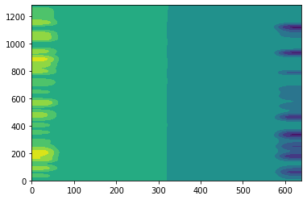
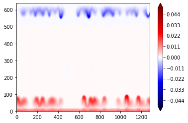
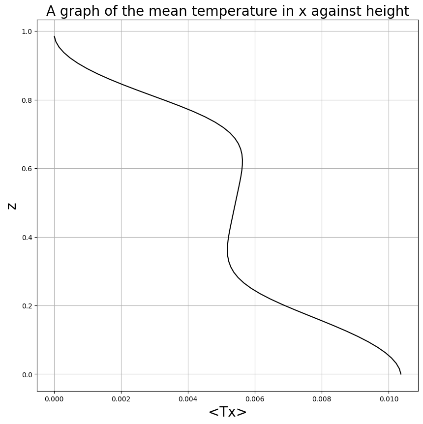

<!DOCTYPE html>


<html lang="en" data-content_root="../../../../../" >

  <head>
    <meta charset="utf-8" />
    <meta name="viewport" content="width=device-width, initial-scale=1.0" /><meta name="viewport" content="width=device-width, initial-scale=1" />

    <title>&lt;no title&gt; &#8212; Chaos and Predictability</title>
  
  
  
  <script data-cfasync="false">
    document.documentElement.dataset.mode = localStorage.getItem("mode") || "";
    document.documentElement.dataset.theme = localStorage.getItem("theme") || "";
  </script>
  <!--
    this give us a css class that will be invisible only if js is disabled
  -->
  <noscript>
    <style>
      .pst-js-only { display: none !important; }

    </style>
  </noscript>
  
  <!-- Loaded before other Sphinx assets -->
  <link href="../../../../../_static/styles/theme.css?digest=8878045cc6db502f8baf" rel="stylesheet" />
<link href="../../../../../_static/styles/pydata-sphinx-theme.css?digest=8878045cc6db502f8baf" rel="stylesheet" />

    <link rel="stylesheet" type="text/css" href="../../../../../_static/pygments.css?v=03e43079" />
    <link rel="stylesheet" type="text/css" href="../../../../../_static/styles/sphinx-book-theme.css?v=a3416100" />
    <link rel="stylesheet" type="text/css" href="../../../../../_static/togglebutton.css?v=13237357" />
    <link rel="stylesheet" type="text/css" href="../../../../../_static/copybutton.css?v=76b2166b" />
    <link rel="stylesheet" type="text/css" href="../../../../../_static/mystnb.4510f1fc1dee50b3e5859aac5469c37c29e427902b24a333a5f9fcb2f0b3ac41.css" />
    <link rel="stylesheet" type="text/css" href="../../../../../_static/sphinx-thebe.css?v=4fa983c6" />
    <link rel="stylesheet" type="text/css" href="../../../../../_static/sphinx-design.min.css?v=95c83b7e" />
  
  <!-- So that users can add custom icons -->
  <script src="../../../../../_static/scripts/fontawesome.js?digest=8878045cc6db502f8baf"></script>
  <!-- Pre-loaded scripts that we'll load fully later -->
  <link rel="preload" as="script" href="../../../../../_static/scripts/bootstrap.js?digest=8878045cc6db502f8baf" />
<link rel="preload" as="script" href="../../../../../_static/scripts/pydata-sphinx-theme.js?digest=8878045cc6db502f8baf" />

    <script src="../../../../../_static/documentation_options.js?v=9eb32ce0"></script>
    <script src="../../../../../_static/doctools.js?v=9a2dae69"></script>
    <script src="../../../../../_static/sphinx_highlight.js?v=dc90522c"></script>
    <script src="../../../../../_static/clipboard.min.js?v=a7894cd8"></script>
    <script src="../../../../../_static/copybutton.js?v=f281be69"></script>
    <script src="../../../../../_static/scripts/sphinx-book-theme.js?v=887ef09a"></script>
    <script>let toggleHintShow = 'Click to show';</script>
    <script>let toggleHintHide = 'Click to hide';</script>
    <script>let toggleOpenOnPrint = 'true';</script>
    <script src="../../../../../_static/togglebutton.js?v=4a39c7ea"></script>
    <script>var togglebuttonSelector = '.toggle, .admonition.dropdown';</script>
    <script src="../../../../../_static/design-tabs.js?v=f930bc37"></script>
    <script>const THEBE_JS_URL = "https://unpkg.com/thebe@0.8.2/lib/index.js"; const thebe_selector = ".thebe,.cell"; const thebe_selector_input = "pre"; const thebe_selector_output = ".output, .cell_output"</script>
    <script async="async" src="../../../../../_static/sphinx-thebe.js?v=c100c467"></script>
    <script>var togglebuttonSelector = '.toggle, .admonition.dropdown';</script>
    <script>const THEBE_JS_URL = "https://unpkg.com/thebe@0.8.2/lib/index.js"; const thebe_selector = ".thebe,.cell"; const thebe_selector_input = "pre"; const thebe_selector_output = ".output, .cell_output"</script>
    <script>DOCUMENTATION_OPTIONS.pagename = 'chaos_and_predictability/_build/jupyter_execute/week3/RB2D/Copy of RB2D_convection';</script>
    <link rel="index" title="Index" href="../../../../../genindex.html" />
    <link rel="search" title="Search" href="../../../../../search.html" />
  <meta name="viewport" content="width=device-width, initial-scale=1"/>
  <meta name="docsearch:language" content="en"/>
  <meta name="docsearch:version" content="" />
  </head>
  
  
  <body data-bs-spy="scroll" data-bs-target=".bd-toc-nav" data-offset="180" data-bs-root-margin="0px 0px -60%" data-default-mode="">

  
  
  <div id="pst-skip-link" class="skip-link d-print-none"><a href="#main-content">Skip to main content</a></div>
  
  <div id="pst-scroll-pixel-helper"></div>
  
  <button type="button" class="btn rounded-pill" id="pst-back-to-top">
    <i class="fa-solid fa-arrow-up"></i>Back to top</button>

  
  <dialog id="pst-search-dialog">
    
<form class="bd-search d-flex align-items-center"
      action="../../../../../search.html"
      method="get">
  <i class="fa-solid fa-magnifying-glass"></i>
  <input type="search"
         class="form-control"
         name="q"
         placeholder="Search this book..."
         aria-label="Search this book..."
         autocomplete="off"
         autocorrect="off"
         autocapitalize="off"
         spellcheck="false"/>
  <span class="search-button__kbd-shortcut"><kbd class="kbd-shortcut__modifier">Ctrl</kbd>+<kbd>K</kbd></span>
</form>
  </dialog>

  <div class="pst-async-banner-revealer d-none">
  <aside id="bd-header-version-warning" class="d-none d-print-none" aria-label="Version warning"></aside>
</div>

  
    <header class="bd-header navbar navbar-expand-lg bd-navbar d-print-none">
    </header>
  

  <div class="bd-container">
    <div class="bd-container__inner bd-page-width">
      
      
      
        
      
      <dialog id="pst-primary-sidebar-modal"></dialog>
      <div id="pst-primary-sidebar" class="bd-sidebar-primary bd-sidebar">
        

  
  <div class="sidebar-header-items sidebar-primary__section">
    
    
    
    
  </div>
  
    <div class="sidebar-primary-items__start sidebar-primary__section">
        <div class="sidebar-primary-item">

  
    
  

<a class="navbar-brand logo" href="../../../../../intro.html">
  
  
  
  
  
    
    
      
    
    
    
    
  
  
</a></div>
        <div class="sidebar-primary-item">

<button class="btn search-button-field search-button__button pst-js-only" title="Search" aria-label="Search" data-bs-placement="bottom" data-bs-toggle="tooltip">
 <i class="fa-solid fa-magnifying-glass"></i>
 <span class="search-button__default-text">Search</span>
 <span class="search-button__kbd-shortcut"><kbd class="kbd-shortcut__modifier">Ctrl</kbd>+<kbd class="kbd-shortcut__modifier">K</kbd></span>
</button></div>
        <div class="sidebar-primary-item"><nav class="bd-links bd-docs-nav" aria-label="Main">
    <div class="bd-toc-item navbar-nav active">
        
        <ul class="nav bd-sidenav bd-sidenav__home-link">
            <li class="toctree-l1">
                <a class="reference internal" href="../../../../../intro.html">
                    Syllabus
                </a>
            </li>
        </ul>
        <ul class="nav bd-sidenav">
<li class="toctree-l1"><a class="reference internal" href="../../../../../week1/week1.html">Week 1: Predictability of Weather and Climate</a></li>
<li class="toctree-l1"><a class="reference internal" href="../../../../../week2/week2.html">Week 2: Predictability source in atmosphere</a></li>
<li class="toctree-l1"><a class="reference internal" href="../../../../../week3/week3.html">Week 3: The minimalist models for studying chaos and predictability I: Lorenz 63</a></li>
<li class="toctree-l1"><a class="reference internal" href="../../../../../week4/week4.html">Week 4: The minimalist models for studying chaos and predictability II: Lorenz 96</a></li>
<li class="toctree-l1"><a class="reference internal" href="../../../../../week5/week5.html">Week 5: The connection between statistical mechanics and ensemble forecast I: Theory</a></li>
<li class="toctree-l1"><a class="reference internal" href="../../../../../week6/week6.html">Week 6: The connection between statistical mechanics and ensemble forecast II: Applications</a></li>
<li class="toctree-l1"><a class="reference internal" href="../../../../../week7/week7.html">Week 7: The stability theory</a></li>
<li class="toctree-l1"><a class="reference internal" href="../../../../../week8/week8.html">Week 8: The generalized stability theory</a></li>
<li class="toctree-l1"><a class="reference internal" href="../../../../../week9/week9.html">Week 9: Predictability through the lens of Information Theory</a></li>
</ul>

    </div>
</nav></div>
    </div>
  
  
  <div class="sidebar-primary-items__end sidebar-primary__section">
      <div class="sidebar-primary-item">
<div id="ethical-ad-placement"
      class="flat"
      data-ea-publisher="readthedocs"
      data-ea-type="readthedocs-sidebar"
      data-ea-manual="true">
</div></div>
  </div>


      </div>
      
      <main id="main-content" class="bd-main" role="main">
        
        

<div class="sbt-scroll-pixel-helper"></div>

          <div class="bd-content">
            <div class="bd-article-container">
              
              <div class="bd-header-article d-print-none">
<div class="header-article-items header-article__inner">
  
    <div class="header-article-items__start">
      
        <div class="header-article-item"><button class="sidebar-toggle primary-toggle btn btn-sm" title="Toggle primary sidebar" data-bs-placement="bottom" data-bs-toggle="tooltip">
  <span class="fa-solid fa-bars"></span>
</button></div>
      
    </div>
  
  
    <div class="header-article-items__end">
      
        <div class="header-article-item">

<div class="article-header-buttons">


<div class="dropdown dropdown-source-buttons">
  <button class="btn dropdown-toggle" type="button" data-bs-toggle="dropdown" aria-expanded="false" aria-label="Source repositories">
    <i class="fab fa-github"></i>
  </button>
  <ul class="dropdown-menu">
      
      
      
      <li><a href="https://github.com/kuiper2000/chaos_and_predictability" target="_blank"
   class="btn btn-sm btn-source-repository-button dropdown-item"
   title="Source repository"
   data-bs-placement="left" data-bs-toggle="tooltip"
>
  

<span class="btn__icon-container">
  <i class="fab fa-github"></i>
  </span>
<span class="btn__text-container">Repository</span>
</a>
</li>
      
      
      
      
      <li><a href="https://github.com/kuiper2000/chaos_and_predictability/issues/new?title=Issue%20on%20page%20%2Fchaos_and_predictability/_build/jupyter_execute/week3/RB2D/Copy of RB2D_convection.html&body=Your%20issue%20content%20here." target="_blank"
   class="btn btn-sm btn-source-issues-button dropdown-item"
   title="Open an issue"
   data-bs-placement="left" data-bs-toggle="tooltip"
>
  

<span class="btn__icon-container">
  <i class="fas fa-lightbulb"></i>
  </span>
<span class="btn__text-container">Open issue</span>
</a>
</li>
      
  </ul>
</div>


<div class="dropdown dropdown-download-buttons">
  <button class="btn dropdown-toggle" type="button" data-bs-toggle="dropdown" aria-expanded="false" aria-label="Download this page">
    <i class="fas fa-download"></i>
  </button>
  <ul class="dropdown-menu">
      
      
      
      <li><a href="../../../../../_sources/chaos_and_predictability/_build/jupyter_execute/week3/RB2D/Copy of RB2D_convection.ipynb" target="_blank"
   class="btn btn-sm btn-download-source-button dropdown-item"
   title="Download source file"
   data-bs-placement="left" data-bs-toggle="tooltip"
>
  

<span class="btn__icon-container">
  <i class="fas fa-file"></i>
  </span>
<span class="btn__text-container">.ipynb</span>
</a>
</li>
      
      
      
      
      <li>
<button onclick="window.print()"
  class="btn btn-sm btn-download-pdf-button dropdown-item"
  title="Print to PDF"
  data-bs-placement="left" data-bs-toggle="tooltip"
>
  

<span class="btn__icon-container">
  <i class="fas fa-file-pdf"></i>
  </span>
<span class="btn__text-container">.pdf</span>
</button>
</li>
      
  </ul>
</div>


<button onclick="toggleFullScreen()"
  class="btn btn-sm btn-fullscreen-button"
  title="Fullscreen mode"
  data-bs-placement="bottom" data-bs-toggle="tooltip"
>
  

<span class="btn__icon-container">
  <i class="fas fa-expand"></i>
  </span>

</button>


<button class="btn btn-sm nav-link pst-navbar-icon theme-switch-button pst-js-only" aria-label="Color mode" data-bs-title="Color mode"  data-bs-placement="bottom" data-bs-toggle="tooltip">
  <i class="theme-switch fa-solid fa-sun                fa-lg" data-mode="light" title="Light"></i>
  <i class="theme-switch fa-solid fa-moon               fa-lg" data-mode="dark"  title="Dark"></i>
  <i class="theme-switch fa-solid fa-circle-half-stroke fa-lg" data-mode="auto"  title="System Settings"></i>
</button>


<button class="btn btn-sm pst-navbar-icon search-button search-button__button pst-js-only" title="Search" aria-label="Search" data-bs-placement="bottom" data-bs-toggle="tooltip">
    <i class="fa-solid fa-magnifying-glass fa-lg"></i>
</button>
<button class="sidebar-toggle secondary-toggle btn btn-sm" title="Toggle secondary sidebar" data-bs-placement="bottom" data-bs-toggle="tooltip">
    <span class="fa-solid fa-list"></span>
</button>
</div></div>
      
    </div>
  
</div>
</div>
              
              

<div id="jb-print-docs-body" class="onlyprint">
    <h1><no title></h1>
    <!-- Table of contents -->
    <div id="print-main-content">
        <div id="jb-print-toc">
            
            <div>
                <h2> Contents </h2>
            </div>
            <nav aria-label="Page">
                <ul class="simple visible nav section-nav flex-column">
</ul>

            </nav>
        </div>
    </div>
</div>

              
                
<div id="searchbox"></div>
                <article class="bd-article">
                  
  <div class="cell docutils container">
<div class="cell_input docutils container">
<div class="highlight-ipython3 notranslate"><div class="highlight"><pre><span></span><span class="c1"># Step 1: Install FFTW</span>
<span class="o">!</span>apt-get<span class="w"> </span>install<span class="w"> </span>libfftw3-dev
<span class="o">!</span>apt-get<span class="w"> </span>install<span class="w"> </span>libfftw3-mpi-dev

<span class="c1"># Step 2: Set paths for Dedalus installation</span>
<span class="kn">import</span><span class="w"> </span><span class="nn">os</span>
<span class="n">os</span><span class="o">.</span><span class="n">environ</span><span class="p">[</span><span class="s1">&#39;MPI_INCLUDE_PATH&#39;</span><span class="p">]</span> <span class="o">=</span> <span class="s2">&quot;/usr/lib/x86_64-linux-gnu/openmpi/include&quot;</span>
<span class="n">os</span><span class="o">.</span><span class="n">environ</span><span class="p">[</span><span class="s1">&#39;MPI_LIBRARY_PATH&#39;</span><span class="p">]</span> <span class="o">=</span> <span class="s2">&quot;/usr/lib/x86_64-linux-gnu&quot;</span>
<span class="n">os</span><span class="o">.</span><span class="n">environ</span><span class="p">[</span><span class="s1">&#39;FFTW_INCLUDE_PATH&#39;</span><span class="p">]</span> <span class="o">=</span> <span class="s2">&quot;/usr/include&quot;</span>
<span class="n">os</span><span class="o">.</span><span class="n">environ</span><span class="p">[</span><span class="s1">&#39;FFTW_LIBRARY_PATH&#39;</span><span class="p">]</span> <span class="o">=</span> <span class="s2">&quot;/usr/lib/x86_64-linux-gnu&quot;</span>

<span class="c1"># Step 3: Install Dedalus using pip</span>
<span class="o">!</span>pip3<span class="w"> </span>install<span class="w"> </span>dedalus

<span class="c1">#2D Rayleigh-Bernard convection in Boussineq approximation</span>

<span class="c1">#Importing necessary modules</span>
<span class="kn">import</span><span class="w"> </span><span class="nn">numpy</span><span class="w"> </span><span class="k">as</span><span class="w"> </span><span class="nn">np</span>
<span class="kn">import</span><span class="w"> </span><span class="nn">matplotlib.pyplot</span><span class="w"> </span><span class="k">as</span><span class="w"> </span><span class="nn">plt</span>
<span class="kn">import</span><span class="w"> </span><span class="nn">matplotlib.animation</span><span class="w"> </span><span class="k">as</span><span class="w"> </span><span class="nn">ani</span>
<span class="kn">import</span><span class="w"> </span><span class="nn">dedalus.public</span><span class="w"> </span><span class="k">as</span><span class="w"> </span><span class="nn">de</span>
<span class="kn">from</span><span class="w"> </span><span class="nn">dedalus.extras</span><span class="w"> </span><span class="kn">import</span> <span class="n">flow_tools</span>
<span class="kn">from</span><span class="w"> </span><span class="nn">dedalus.tools</span><span class="w"> </span><span class="kn">import</span> <span class="n">post</span>
<span class="kn">import</span><span class="w"> </span><span class="nn">shutil</span>
<span class="kn">import</span><span class="w"> </span><span class="nn">random</span>
<span class="kn">import</span><span class="w"> </span><span class="nn">time</span>
<span class="kn">import</span><span class="w"> </span><span class="nn">h5py</span>
<span class="kn">import</span><span class="w"> </span><span class="nn">pathlib</span>
<span class="kn">import</span><span class="w"> </span><span class="nn">logging</span>

<span class="n">logger</span> <span class="o">=</span> <span class="n">logging</span><span class="o">.</span><span class="n">getLogger</span><span class="p">(</span><span class="s1">&#39;2D RB Convection&#39;</span><span class="p">)</span>
</pre></div>
</div>
</div>
<div class="cell_output docutils container">
<div class="output stream highlight-myst-ansi notranslate"><div class="highlight"><pre><span></span>zsh:1: command not found: apt-get
</pre></div>
</div>
<div class="output stream highlight-myst-ansi notranslate"><div class="highlight"><pre><span></span>zsh:1: command not found: apt-get
</pre></div>
</div>
<div class="output stream highlight-myst-ansi notranslate"><div class="highlight"><pre><span></span>Collecting dedalus
  Using cached dedalus-3.0.4.tar.gz (248 kB)
</pre></div>
</div>
<div class="output stream highlight-myst-ansi notranslate"><div class="highlight"><pre><span></span>  Installing build dependencies ... ?25l-
</pre></div>
</div>
<div class="output stream highlight-myst-ansi notranslate"><div class="highlight"><pre><span></span> \
</pre></div>
</div>
<div class="output stream highlight-myst-ansi notranslate"><div class="highlight"><pre><span></span> |
</pre></div>
</div>
<div class="output stream highlight-myst-ansi notranslate"><div class="highlight"><pre><span></span> /
</pre></div>
</div>
<div class="output stream highlight-myst-ansi notranslate"><div class="highlight"><pre><span></span> -
</pre></div>
</div>
<div class="output stream highlight-myst-ansi notranslate"><div class="highlight"><pre><span></span> done
</pre></div>
</div>
<div class="output stream highlight-myst-ansi notranslate"><div class="highlight"><pre><span></span>?25h  Getting requirements to build wheel ... ?25l-
</pre></div>
</div>
<div class="output stream highlight-myst-ansi notranslate"><div class="highlight"><pre><span></span> done
</pre></div>
</div>
<div class="output stream highlight-myst-ansi notranslate"><div class="highlight"><pre><span></span>?25h  Preparing metadata (pyproject.toml) ... ?25l- done
</pre></div>
</div>
<div class="output stream highlight-myst-ansi notranslate"><div class="highlight"><pre><span></span>?25hCollecting docopt (from dedalus)
  Using cached docopt-0.6.2-py2.py3-none-any.whl
</pre></div>
</div>
<div class="output stream highlight-myst-ansi notranslate"><div class="highlight"><pre><span></span>Collecting h5py&gt;=3.0.0 (from dedalus)
  Using cached h5py-3.14.0-cp39-cp39-macosx_11_0_arm64.whl.metadata (2.7 kB)
Requirement already satisfied: matplotlib in /Users/Shared/miniconda3/envs/jupyterbook/lib/python3.9/site-packages (from dedalus) (3.9.4)
Collecting mpi4py&gt;=2.0.0 (from dedalus)
</pre></div>
</div>
<div class="output stream highlight-myst-ansi notranslate"><div class="highlight"><pre><span></span>  Using cached mpi4py-4.1.0-cp39-cp39-macosx_11_0_arm64.whl.metadata (16 kB)
</pre></div>
</div>
<div class="output stream highlight-myst-ansi notranslate"><div class="highlight"><pre><span></span>Collecting numexpr (from dedalus)
  Using cached numexpr-2.10.2-cp39-cp39-macosx_11_0_arm64.whl.metadata (8.1 kB)
Requirement already satisfied: numpy&gt;=1.20.0 in /Users/Shared/miniconda3/envs/jupyterbook/lib/python3.9/site-packages (from dedalus) (2.0.2)
Collecting py (from dedalus)
</pre></div>
</div>
<div class="output stream highlight-myst-ansi notranslate"><div class="highlight"><pre><span></span>  Using cached py-1.11.0-py2.py3-none-any.whl.metadata (2.8 kB)
Requirement already satisfied: pytest in /Users/Shared/miniconda3/envs/jupyterbook/lib/python3.9/site-packages (from dedalus) (8.3.5)
Collecting pytest-benchmark (from dedalus)
  Using cached pytest_benchmark-5.1.0-py3-none-any.whl.metadata (25 kB)
</pre></div>
</div>
<div class="output stream highlight-myst-ansi notranslate"><div class="highlight"><pre><span></span>Collecting pytest-cov (from dedalus)
  Using cached pytest_cov-6.3.0-py3-none-any.whl.metadata (30 kB)
</pre></div>
</div>
<div class="output stream highlight-myst-ansi notranslate"><div class="highlight"><pre><span></span>Collecting pytest-parallel (from dedalus)
  Using cached pytest_parallel-0.1.1-py3-none-any.whl.metadata (3.0 kB)
Requirement already satisfied: scipy&gt;=1.4.0 in /Users/Shared/miniconda3/envs/jupyterbook/lib/python3.9/site-packages (from dedalus) (1.13.1)
</pre></div>
</div>
<div class="output stream highlight-myst-ansi notranslate"><div class="highlight"><pre><span></span>Collecting xarray (from dedalus)
  Using cached xarray-2024.7.0-py3-none-any.whl.metadata (11 kB)
</pre></div>
</div>
<div class="output stream highlight-myst-ansi notranslate"><div class="highlight"><pre><span></span>Requirement already satisfied: contourpy&gt;=1.0.1 in /Users/Shared/miniconda3/envs/jupyterbook/lib/python3.9/site-packages (from matplotlib-&gt;dedalus) (1.3.0)
Requirement already satisfied: cycler&gt;=0.10 in /Users/Shared/miniconda3/envs/jupyterbook/lib/python3.9/site-packages (from matplotlib-&gt;dedalus) (0.12.1)
Requirement already satisfied: fonttools&gt;=4.22.0 in /Users/Shared/miniconda3/envs/jupyterbook/lib/python3.9/site-packages (from matplotlib-&gt;dedalus) (4.56.0)
Requirement already satisfied: kiwisolver&gt;=1.3.1 in /Users/Shared/miniconda3/envs/jupyterbook/lib/python3.9/site-packages (from matplotlib-&gt;dedalus) (1.4.7)
Requirement already satisfied: packaging&gt;=20.0 in /Users/Shared/miniconda3/envs/jupyterbook/lib/python3.9/site-packages (from matplotlib-&gt;dedalus) (24.2)
Requirement already satisfied: pillow&gt;=8 in /Users/Shared/miniconda3/envs/jupyterbook/lib/python3.9/site-packages (from matplotlib-&gt;dedalus) (11.1.0)
Requirement already satisfied: pyparsing&gt;=2.3.1 in /Users/Shared/miniconda3/envs/jupyterbook/lib/python3.9/site-packages (from matplotlib-&gt;dedalus) (3.2.1)
Requirement already satisfied: python-dateutil&gt;=2.7 in /Users/Shared/miniconda3/envs/jupyterbook/lib/python3.9/site-packages (from matplotlib-&gt;dedalus) (2.9.0.post0)
Requirement already satisfied: importlib-resources&gt;=3.2.0 in /Users/Shared/miniconda3/envs/jupyterbook/lib/python3.9/site-packages (from matplotlib-&gt;dedalus) (6.5.2)
Requirement already satisfied: exceptiongroup&gt;=1.0.0rc8 in /Users/Shared/miniconda3/envs/jupyterbook/lib/python3.9/site-packages (from pytest-&gt;dedalus) (1.2.2)
Requirement already satisfied: iniconfig in /Users/Shared/miniconda3/envs/jupyterbook/lib/python3.9/site-packages (from pytest-&gt;dedalus) (2.0.0)
Requirement already satisfied: pluggy&lt;2,&gt;=1.5 in /Users/Shared/miniconda3/envs/jupyterbook/lib/python3.9/site-packages (from pytest-&gt;dedalus) (1.5.0)
Requirement already satisfied: tomli&gt;=1 in /Users/Shared/miniconda3/envs/jupyterbook/lib/python3.9/site-packages (from pytest-&gt;dedalus) (2.2.1)
</pre></div>
</div>
<div class="output stream highlight-myst-ansi notranslate"><div class="highlight"><pre><span></span>Collecting py-cpuinfo (from pytest-benchmark-&gt;dedalus)
  Using cached py_cpuinfo-9.0.0-py3-none-any.whl.metadata (794 bytes)
</pre></div>
</div>
<div class="output stream highlight-myst-ansi notranslate"><div class="highlight"><pre><span></span>Collecting coverage&gt;=7.5 (from coverage[toml]&gt;=7.5-&gt;pytest-cov-&gt;dedalus)
</pre></div>
</div>
<div class="output stream highlight-myst-ansi notranslate"><div class="highlight"><pre><span></span>  Using cached coverage-7.10.6-cp39-cp39-macosx_11_0_arm64.whl.metadata (8.9 kB)
Collecting tblib (from pytest-parallel-&gt;dedalus)
  Using cached tblib-3.1.0-py3-none-any.whl.metadata (25 kB)
Requirement already satisfied: pandas&gt;=2.0 in /Users/Shared/miniconda3/envs/jupyterbook/lib/python3.9/site-packages (from xarray-&gt;dedalus) (2.2.3)
</pre></div>
</div>
<div class="output stream highlight-myst-ansi notranslate"><div class="highlight"><pre><span></span>Requirement already satisfied: zipp&gt;=3.1.0 in /Users/Shared/miniconda3/envs/jupyterbook/lib/python3.9/site-packages (from importlib-resources&gt;=3.2.0-&gt;matplotlib-&gt;dedalus) (3.21.0)
Requirement already satisfied: pytz&gt;=2020.1 in /Users/Shared/miniconda3/envs/jupyterbook/lib/python3.9/site-packages (from pandas&gt;=2.0-&gt;xarray-&gt;dedalus) (2024.1)
Requirement already satisfied: tzdata&gt;=2022.7 in /Users/Shared/miniconda3/envs/jupyterbook/lib/python3.9/site-packages (from pandas&gt;=2.0-&gt;xarray-&gt;dedalus) (2025.1)
Requirement already satisfied: six&gt;=1.5 in /Users/Shared/miniconda3/envs/jupyterbook/lib/python3.9/site-packages (from python-dateutil&gt;=2.7-&gt;matplotlib-&gt;dedalus) (1.17.0)
Using cached h5py-3.14.0-cp39-cp39-macosx_11_0_arm64.whl (2.8 MB)
Using cached mpi4py-4.1.0-cp39-cp39-macosx_11_0_arm64.whl (1.4 MB)
Using cached numexpr-2.10.2-cp39-cp39-macosx_11_0_arm64.whl (134 kB)
Using cached py-1.11.0-py2.py3-none-any.whl (98 kB)
Using cached pytest_benchmark-5.1.0-py3-none-any.whl (44 kB)
Using cached pytest_cov-6.3.0-py3-none-any.whl (25 kB)
Using cached pytest_parallel-0.1.1-py3-none-any.whl (7.0 kB)
Using cached xarray-2024.7.0-py3-none-any.whl (1.2 MB)
Using cached coverage-7.10.6-cp39-cp39-macosx_11_0_arm64.whl (217 kB)
</pre></div>
</div>
<div class="output stream highlight-myst-ansi notranslate"><div class="highlight"><pre><span></span>Using cached py_cpuinfo-9.0.0-py3-none-any.whl (22 kB)
Using cached tblib-3.1.0-py3-none-any.whl (12 kB)
Building wheels for collected packages: dedalus
</pre></div>
</div>
<div class="output stream highlight-myst-ansi notranslate"><div class="highlight"><pre><span></span>  Building wheel for dedalus (pyproject.toml) ... ?25l-
</pre></div>
</div>
<div class="output stream highlight-myst-ansi notranslate"><div class="highlight"><pre><span></span> error
  <span class=" -Color -Color-Bold -Color-Bold-Red">error</span>: <span class=" -Color -Color-Bold">subprocess-exited-with-error</span>
  
  <span class=" -Color -Color-Red">×</span> <span class=" -Color -Color-Green">Building wheel for dedalus </span><span class=" -Color -Color-Bold -Color-Bold-Green">(</span><span class=" -Color -Color-Green">pyproject.toml</span><span class=" -Color -Color-Bold -Color-Bold-Green">)</span> did not run successfully.
  <span class=" -Color -Color-Red">│</span> exit code: <span class=" -Color -Color-Bold -Color-Bold-Cyan">1</span>
  <span class=" -Color -Color-Red">╰─&gt;</span> <span class=" -Color -Color-Red">[118 lines of output]</span>
  <span class=" -Color -Color-Red">   </span> 
  <span class=" -Color -Color-Red">   </span> Configuration:
  <span class=" -Color -Color-Red">   </span>   INCLUDE_MPI = True
  <span class=" -Color -Color-Red">   </span>   INCLUDE_FFTW = True
  <span class=" -Color -Color-Red">   </span>   FFTW_STATIC = False
  <span class=" -Color -Color-Red">   </span>   CYTHON_PROFILE = False
  <span class=" -Color -Color-Red">   </span> 
  <span class=" -Color -Color-Red">   </span> Looking for mpi include path:
  <span class=" -Color -Color-Red">   </span>   Found env var MPI_INCLUDE_PATH = /usr/lib/x86_64-linux-gnu/openmpi/include
  <span class=" -Color -Color-Red">   </span> Looking for mpi library path:
  <span class=" -Color -Color-Red">   </span>   Found env var MPI_LIBRARY_PATH = /usr/lib/x86_64-linux-gnu
  <span class=" -Color -Color-Red">   </span> Looking for fftw include path:
  <span class=" -Color -Color-Red">   </span>   Found env var FFTW_INCLUDE_PATH = /usr/include
  <span class=" -Color -Color-Red">   </span> Looking for fftw library path:
  <span class=" -Color -Color-Red">   </span>   Found env var FFTW_LIBRARY_PATH = /usr/lib/x86_64-linux-gnu
  <span class=" -Color -Color-Red">   </span> 
  <span class=" -Color -Color-Red">   </span> running bdist_wheel
  <span class=" -Color -Color-Red">   </span> running build
  <span class=" -Color -Color-Red">   </span> running build_py
  <span class=" -Color -Color-Red">   </span> creating build/lib.macosx-11.0-arm64-cpython-39/dedalus
  <span class=" -Color -Color-Red">   </span> copying dedalus/public.py -&gt; build/lib.macosx-11.0-arm64-cpython-39/dedalus
  <span class=" -Color -Color-Red">   </span> copying dedalus/__init__.py -&gt; build/lib.macosx-11.0-arm64-cpython-39/dedalus
  <span class=" -Color -Color-Red">   </span> copying dedalus/__main__.py -&gt; build/lib.macosx-11.0-arm64-cpython-39/dedalus
  <span class=" -Color -Color-Red">   </span> creating build/lib.macosx-11.0-arm64-cpython-39/dedalus/tools
  <span class=" -Color -Color-Red">   </span> copying dedalus/tools/plot_op.py -&gt; build/lib.macosx-11.0-arm64-cpython-39/dedalus/tools
  <span class=" -Color -Color-Red">   </span> copying dedalus/tools/post.py -&gt; build/lib.macosx-11.0-arm64-cpython-39/dedalus/tools
  <span class=" -Color -Color-Red">   </span> copying dedalus/tools/logging.py -&gt; build/lib.macosx-11.0-arm64-cpython-39/dedalus/tools
  <span class=" -Color -Color-Red">   </span> copying dedalus/tools/config.py -&gt; build/lib.macosx-11.0-arm64-cpython-39/dedalus/tools
  <span class=" -Color -Color-Red">   </span> copying dedalus/tools/parsing.py -&gt; build/lib.macosx-11.0-arm64-cpython-39/dedalus/tools
  <span class=" -Color -Color-Red">   </span> copying dedalus/tools/clenshaw.py -&gt; build/lib.macosx-11.0-arm64-cpython-39/dedalus/tools
  <span class=" -Color -Color-Red">   </span> copying dedalus/tools/random_arrays.py -&gt; build/lib.macosx-11.0-arm64-cpython-39/dedalus/tools
  <span class=" -Color -Color-Red">   </span> copying dedalus/tools/dispatch.py -&gt; build/lib.macosx-11.0-arm64-cpython-39/dedalus/tools
  <span class=" -Color -Color-Red">   </span> copying dedalus/tools/cache.py -&gt; build/lib.macosx-11.0-arm64-cpython-39/dedalus/tools
  <span class=" -Color -Color-Red">   </span> copying dedalus/tools/__init__.py -&gt; build/lib.macosx-11.0-arm64-cpython-39/dedalus/tools
  <span class=" -Color -Color-Red">   </span> copying dedalus/tools/jacobi.py -&gt; build/lib.macosx-11.0-arm64-cpython-39/dedalus/tools
  <span class=" -Color -Color-Red">   </span> copying dedalus/tools/exceptions.py -&gt; build/lib.macosx-11.0-arm64-cpython-39/dedalus/tools
  <span class=" -Color -Color-Red">   </span> copying dedalus/tools/progress.py -&gt; build/lib.macosx-11.0-arm64-cpython-39/dedalus/tools
  <span class=" -Color -Color-Red">   </span> copying dedalus/tools/parallel.py -&gt; build/lib.macosx-11.0-arm64-cpython-39/dedalus/tools
  <span class=" -Color -Color-Red">   </span> copying dedalus/tools/array.py -&gt; build/lib.macosx-11.0-arm64-cpython-39/dedalus/tools
  <span class=" -Color -Color-Red">   </span> copying dedalus/tools/general.py -&gt; build/lib.macosx-11.0-arm64-cpython-39/dedalus/tools
  <span class=" -Color -Color-Red">   </span> creating build/lib.macosx-11.0-arm64-cpython-39/dedalus/core
  <span class=" -Color -Color-Red">   </span> copying dedalus/core/basis.py -&gt; build/lib.macosx-11.0-arm64-cpython-39/dedalus/core
  <span class=" -Color -Color-Red">   </span> copying dedalus/core/field.py -&gt; build/lib.macosx-11.0-arm64-cpython-39/dedalus/core
  <span class=" -Color -Color-Red">   </span> copying dedalus/core/arithmetic.py -&gt; build/lib.macosx-11.0-arm64-cpython-39/dedalus/core
  <span class=" -Color -Color-Red">   </span> copying dedalus/core/transforms.py -&gt; build/lib.macosx-11.0-arm64-cpython-39/dedalus/core
  <span class=" -Color -Color-Red">   </span> copying dedalus/core/timesteppers.py -&gt; build/lib.macosx-11.0-arm64-cpython-39/dedalus/core
  <span class=" -Color -Color-Red">   </span> copying dedalus/core/distributor.py -&gt; build/lib.macosx-11.0-arm64-cpython-39/dedalus/core
  <span class=" -Color -Color-Red">   </span> copying dedalus/core/system.py -&gt; build/lib.macosx-11.0-arm64-cpython-39/dedalus/core
  <span class=" -Color -Color-Red">   </span> copying dedalus/core/domain.py -&gt; build/lib.macosx-11.0-arm64-cpython-39/dedalus/core
  <span class=" -Color -Color-Red">   </span> copying dedalus/core/coords.py -&gt; build/lib.macosx-11.0-arm64-cpython-39/dedalus/core
  <span class=" -Color -Color-Red">   </span> copying dedalus/core/__init__.py -&gt; build/lib.macosx-11.0-arm64-cpython-39/dedalus/core
  <span class=" -Color -Color-Red">   </span> copying dedalus/core/solvers.py -&gt; build/lib.macosx-11.0-arm64-cpython-39/dedalus/core
  <span class=" -Color -Color-Red">   </span> copying dedalus/core/problems.py -&gt; build/lib.macosx-11.0-arm64-cpython-39/dedalus/core
  <span class=" -Color -Color-Red">   </span> copying dedalus/core/future.py -&gt; build/lib.macosx-11.0-arm64-cpython-39/dedalus/core
  <span class=" -Color -Color-Red">   </span> copying dedalus/core/subsystems.py -&gt; build/lib.macosx-11.0-arm64-cpython-39/dedalus/core
  <span class=" -Color -Color-Red">   </span> copying dedalus/core/operators.py -&gt; build/lib.macosx-11.0-arm64-cpython-39/dedalus/core
  <span class=" -Color -Color-Red">   </span> copying dedalus/core/evaluator.py -&gt; build/lib.macosx-11.0-arm64-cpython-39/dedalus/core
  <span class=" -Color -Color-Red">   </span> creating build/lib.macosx-11.0-arm64-cpython-39/dedalus/tests
  <span class=" -Color -Color-Red">   </span> copying dedalus/tests/test_spherical_arithmetic.py -&gt; build/lib.macosx-11.0-arm64-cpython-39/dedalus/tests
  <span class=" -Color -Color-Red">   </span> copying dedalus/tests/test_jacobi_operators.py -&gt; build/lib.macosx-11.0-arm64-cpython-39/dedalus/tests
  <span class=" -Color -Color-Red">   </span> copying dedalus/tests/test_sphere_ncc.py -&gt; build/lib.macosx-11.0-arm64-cpython-39/dedalus/tests
  <span class=" -Color -Color-Red">   </span> copying dedalus/tests/test_cfl.py -&gt; build/lib.macosx-11.0-arm64-cpython-39/dedalus/tests
  <span class=" -Color -Color-Red">   </span> copying dedalus/tests/test_sphere_calculus.py -&gt; build/lib.macosx-11.0-arm64-cpython-39/dedalus/tests
  <span class=" -Color -Color-Red">   </span> copying dedalus/tests/test_spherical_operators.py -&gt; build/lib.macosx-11.0-arm64-cpython-39/dedalus/tests
  <span class=" -Color -Color-Red">   </span> copying dedalus/tests/test_spherical_calculus.py -&gt; build/lib.macosx-11.0-arm64-cpython-39/dedalus/tests
  <span class=" -Color -Color-Red">   </span> copying dedalus/tests/test_lbvp.py -&gt; build/lib.macosx-11.0-arm64-cpython-39/dedalus/tests
  <span class=" -Color -Color-Red">   </span> copying dedalus/tests/test_evp.py -&gt; build/lib.macosx-11.0-arm64-cpython-39/dedalus/tests
  <span class=" -Color -Color-Red">   </span> copying dedalus/tests/test_spherical_ncc.py -&gt; build/lib.macosx-11.0-arm64-cpython-39/dedalus/tests
  <span class=" -Color -Color-Red">   </span> copying dedalus/tests/test_grid_operators.py -&gt; build/lib.macosx-11.0-arm64-cpython-39/dedalus/tests
  <span class=" -Color -Color-Red">   </span> copying dedalus/tests/test_polar_operators.py -&gt; build/lib.macosx-11.0-arm64-cpython-39/dedalus/tests
  <span class=" -Color -Color-Red">   </span> copying dedalus/tests/test_ivp.py -&gt; build/lib.macosx-11.0-arm64-cpython-39/dedalus/tests
  <span class=" -Color -Color-Red">   </span> copying dedalus/tests/ball_diffusion_analytical_eigenvalues.py -&gt; build/lib.macosx-11.0-arm64-cpython-39/dedalus/tests
  <span class=" -Color -Color-Red">   </span> copying dedalus/tests/__init__.py -&gt; build/lib.macosx-11.0-arm64-cpython-39/dedalus/tests
  <span class=" -Color -Color-Red">   </span> copying dedalus/tests/test_polar_ncc.py -&gt; build/lib.macosx-11.0-arm64-cpython-39/dedalus/tests
  <span class=" -Color -Color-Red">   </span> copying dedalus/tests/test_cylinder_calculus.py -&gt; build/lib.macosx-11.0-arm64-cpython-39/dedalus/tests
  <span class=" -Color -Color-Red">   </span> copying dedalus/tests/test_clenshaw.py -&gt; build/lib.macosx-11.0-arm64-cpython-39/dedalus/tests
  <span class=" -Color -Color-Red">   </span> copying dedalus/tests/test_output.py -&gt; build/lib.macosx-11.0-arm64-cpython-39/dedalus/tests
  <span class=" -Color -Color-Red">   </span> copying dedalus/tests/test_cylinder_operators.py -&gt; build/lib.macosx-11.0-arm64-cpython-39/dedalus/tests
  <span class=" -Color -Color-Red">   </span> copying dedalus/tests/test_nlbvp.py -&gt; build/lib.macosx-11.0-arm64-cpython-39/dedalus/tests
  <span class=" -Color -Color-Red">   </span> copying dedalus/tests/test_transforms.py -&gt; build/lib.macosx-11.0-arm64-cpython-39/dedalus/tests
  <span class=" -Color -Color-Red">   </span> copying dedalus/tests/test_cartesian_ncc.py -&gt; build/lib.macosx-11.0-arm64-cpython-39/dedalus/tests
  <span class=" -Color -Color-Red">   </span> copying dedalus/tests/test_cylinder_ncc.py -&gt; build/lib.macosx-11.0-arm64-cpython-39/dedalus/tests
  <span class=" -Color -Color-Red">   </span> copying dedalus/tests/test_cartesian_operators.py -&gt; build/lib.macosx-11.0-arm64-cpython-39/dedalus/tests
  <span class=" -Color -Color-Red">   </span> copying dedalus/tests/test_polar_calculus.py -&gt; build/lib.macosx-11.0-arm64-cpython-39/dedalus/tests
  <span class=" -Color -Color-Red">   </span> copying dedalus/tests/test_fourier_operators.py -&gt; build/lib.macosx-11.0-arm64-cpython-39/dedalus/tests
  <span class=" -Color -Color-Red">   </span> creating build/lib.macosx-11.0-arm64-cpython-39/dedalus/libraries
  <span class=" -Color -Color-Red">   </span> copying dedalus/libraries/__init__.py -&gt; build/lib.macosx-11.0-arm64-cpython-39/dedalus/libraries
  <span class=" -Color -Color-Red">   </span> copying dedalus/libraries/matsolvers.py -&gt; build/lib.macosx-11.0-arm64-cpython-39/dedalus/libraries
  <span class=" -Color -Color-Red">   </span> creating build/lib.macosx-11.0-arm64-cpython-39/dedalus/extras
  <span class=" -Color -Color-Red">   </span> copying dedalus/extras/__init__.py -&gt; build/lib.macosx-11.0-arm64-cpython-39/dedalus/extras
  <span class=" -Color -Color-Red">   </span> copying dedalus/extras/plot_tools.py -&gt; build/lib.macosx-11.0-arm64-cpython-39/dedalus/extras
  <span class=" -Color -Color-Red">   </span> copying dedalus/extras/flow_tools.py -&gt; build/lib.macosx-11.0-arm64-cpython-39/dedalus/extras
  <span class=" -Color -Color-Red">   </span> copying dedalus/extras/quick_domains.py -&gt; build/lib.macosx-11.0-arm64-cpython-39/dedalus/extras
  <span class=" -Color -Color-Red">   </span> creating build/lib.macosx-11.0-arm64-cpython-39/dedalus/libraries/dedalus_sphere
  <span class=" -Color -Color-Red">   </span> copying dedalus/libraries/dedalus_sphere/ball_wrapper.py -&gt; build/lib.macosx-11.0-arm64-cpython-39/dedalus/libraries/dedalus_sphere
  <span class=" -Color -Color-Red">   </span> copying dedalus/libraries/dedalus_sphere/timesteppers.py -&gt; build/lib.macosx-11.0-arm64-cpython-39/dedalus/libraries/dedalus_sphere
  <span class=" -Color -Color-Red">   </span> copying dedalus/libraries/dedalus_sphere/zernike.py -&gt; build/lib.macosx-11.0-arm64-cpython-39/dedalus/libraries/dedalus_sphere
  <span class=" -Color -Color-Red">   </span> copying dedalus/libraries/dedalus_sphere/clenshaw.py -&gt; build/lib.macosx-11.0-arm64-cpython-39/dedalus/libraries/dedalus_sphere
  <span class=" -Color -Color-Red">   </span> copying dedalus/libraries/dedalus_sphere/sphere_wrapper.py -&gt; build/lib.macosx-11.0-arm64-cpython-39/dedalus/libraries/dedalus_sphere
  <span class=" -Color -Color-Red">   </span> copying dedalus/libraries/dedalus_sphere/shell.py -&gt; build/lib.macosx-11.0-arm64-cpython-39/dedalus/libraries/dedalus_sphere
  <span class=" -Color -Color-Red">   </span> copying dedalus/libraries/dedalus_sphere/__init__.py -&gt; build/lib.macosx-11.0-arm64-cpython-39/dedalus/libraries/dedalus_sphere
  <span class=" -Color -Color-Red">   </span> copying dedalus/libraries/dedalus_sphere/jacobi.py -&gt; build/lib.macosx-11.0-arm64-cpython-39/dedalus/libraries/dedalus_sphere
  <span class=" -Color -Color-Red">   </span> copying dedalus/libraries/dedalus_sphere/old_intertwiner.py -&gt; build/lib.macosx-11.0-arm64-cpython-39/dedalus/libraries/dedalus_sphere
  <span class=" -Color -Color-Red">   </span> copying dedalus/libraries/dedalus_sphere/tuple_tools.py -&gt; build/lib.macosx-11.0-arm64-cpython-39/dedalus/libraries/dedalus_sphere
  <span class=" -Color -Color-Red">   </span> copying dedalus/libraries/dedalus_sphere/operators.py -&gt; build/lib.macosx-11.0-arm64-cpython-39/dedalus/libraries/dedalus_sphere
  <span class=" -Color -Color-Red">   </span> copying dedalus/libraries/dedalus_sphere/spin_operators.py -&gt; build/lib.macosx-11.0-arm64-cpython-39/dedalus/libraries/dedalus_sphere
  <span class=" -Color -Color-Red">   </span> copying dedalus/libraries/dedalus_sphere/sphere.py -&gt; build/lib.macosx-11.0-arm64-cpython-39/dedalus/libraries/dedalus_sphere
  <span class=" -Color -Color-Red">   </span> copying dedalus/libraries/dedalus_sphere/annulus.py -&gt; build/lib.macosx-11.0-arm64-cpython-39/dedalus/libraries/dedalus_sphere
  <span class=" -Color -Color-Red">   </span> creating build/lib.macosx-11.0-arm64-cpython-39/dedalus/libraries/fftw
  <span class=" -Color -Color-Red">   </span> copying dedalus/libraries/fftw/__init__.py -&gt; build/lib.macosx-11.0-arm64-cpython-39/dedalus/libraries/fftw
  <span class=" -Color -Color-Red">   </span> copying dedalus/dedalus.cfg -&gt; build/lib.macosx-11.0-arm64-cpython-39/dedalus
  <span class=" -Color -Color-Red">   </span> copying dedalus/examples.tar.gz -&gt; build/lib.macosx-11.0-arm64-cpython-39/dedalus
  <span class=" -Color -Color-Red">   </span> running build_ext
  <span class=" -Color -Color-Red">   </span> building &#39;dedalus.core.transposes&#39; extension
  <span class=" -Color -Color-Red">   </span> creating build/temp.macosx-11.0-arm64-cpython-39/dedalus/core
  <span class=" -Color -Color-Red">   </span> clang -Wno-unused-result -Wsign-compare -Wunreachable-code -DNDEBUG -fwrapv -O2 -Wall -fPIC -O2 -isystem /Users/Shared/miniconda3/envs/jupyterbook/include -arch arm64 -fPIC -O2 -isystem /Users/Shared/miniconda3/envs/jupyterbook/include -arch arm64 -I/private/var/folders/x1/nb2x5h5j08b2xx8xkc64r43m0000gn/T/pip-build-env-qrdrmihj/overlay/lib/python3.9/site-packages/numpy/_core/include -I/private/var/folders/x1/nb2x5h5j08b2xx8xkc64r43m0000gn/T/pip-build-env-qrdrmihj/overlay/lib/python3.9/site-packages/mpi4py/include -I/usr/lib/x86_64-linux-gnu/openmpi/include -Idedalus/libraries/fftw/ -I/usr/include -I/Users/Shared/miniconda3/envs/jupyterbook/include/python3.9 -c dedalus/core/transposes.c -o build/temp.macosx-11.0-arm64-cpython-39/dedalus/core/transposes.o -DNPY_NO_DEPRECATED_API=NPY_1_7_API_VERSION -Wno-unused-function -fopenmp
  <span class=" -Color -Color-Red">   </span> clang: error: unsupported option &#39;-fopenmp&#39;
  <span class=" -Color -Color-Red">   </span> error: command &#39;/usr/bin/clang&#39; failed with exit code 1
  <span class=" -Color -Color-Red">   </span> <span class=" -Color -Color-Red">[end of output]</span>
  
  <span class=" -Color -Color-Bold -Color-Bold-Magenta">note</span>: This error originates from a subprocess, and is likely not a problem with pip.
<span class=" -Color -Color-Red">  ERROR: Failed building wheel for dedalus</span>
?25hFailed to build dedalus
<span class=" -Color -Color-Red">ERROR: Failed to build installable wheels for some pyproject.toml based projects (dedalus)</span>

</pre></div>
</div>
<div class="output traceback highlight-ipythontb notranslate"><div class="highlight"><pre><span></span><span class="gt">---------------------------------------------------------------------------</span>
<span class="ne">ModuleNotFoundError</span><span class="g g-Whitespace">                       </span>Traceback (most recent call last)
<span class="n">Cell</span> <span class="n">In</span><span class="p">[</span><span class="mi">1</span><span class="p">],</span> <span class="n">line</span> <span class="mi">21</span>
<span class="g g-Whitespace">     </span><span class="mi">19</span> <span class="kn">import</span><span class="w"> </span><span class="nn">matplotlib.pyplot</span><span class="w"> </span><span class="k">as</span><span class="w"> </span><span class="nn">plt</span>
<span class="g g-Whitespace">     </span><span class="mi">20</span> <span class="kn">import</span><span class="w"> </span><span class="nn">matplotlib.animation</span><span class="w"> </span><span class="k">as</span><span class="w"> </span><span class="nn">ani</span>
<span class="ne">---&gt; </span><span class="mi">21</span> <span class="kn">import</span><span class="w"> </span><span class="nn">dedalus.public</span><span class="w"> </span><span class="k">as</span><span class="w"> </span><span class="nn">de</span>
<span class="g g-Whitespace">     </span><span class="mi">22</span> <span class="kn">from</span><span class="w"> </span><span class="nn">dedalus.extras</span><span class="w"> </span><span class="kn">import</span> <span class="n">flow_tools</span>
<span class="g g-Whitespace">     </span><span class="mi">23</span> <span class="kn">from</span><span class="w"> </span><span class="nn">dedalus.tools</span><span class="w"> </span><span class="kn">import</span> <span class="n">post</span>

<span class="ne">ModuleNotFoundError</span>: No module named &#39;dedalus&#39;
</pre></div>
</div>
</div>
</div>
<div class="cell docutils container">
<div class="cell_input docutils container">
<div class="highlight-ipython3 notranslate"><div class="highlight"><pre><span></span><span class="kn">from</span><span class="w"> </span><span class="nn">google.colab</span><span class="w"> </span><span class="kn">import</span> <span class="n">drive</span>
<span class="n">drive</span><span class="o">.</span><span class="n">mount</span><span class="p">(</span><span class="s1">&#39;/content/gdrive&#39;</span><span class="p">)</span>
</pre></div>
</div>
</div>
<div class="cell_output docutils container">
<div class="output stream highlight-myst-ansi notranslate"><div class="highlight"><pre><span></span>Mounted at /content/gdrive
</pre></div>
</div>
</div>
</div>
<div class="cell docutils container">
<div class="cell_input docutils container">
<div class="highlight-ipython3 notranslate"><div class="highlight"><pre><span></span><span class="o">!</span>rm<span class="w"> </span>-rf<span class="w"> </span>/content/gdrive/MyDrive/website-hugo/chaos_and_predictability/week3/RB2D/simulation/snapshots
</pre></div>
</div>
</div>
</div>
<div class="cell docutils container">
<div class="cell_input docutils container">
<div class="highlight-ipython3 notranslate"><div class="highlight"><pre><span></span><span class="c1">#Defining variables</span>
<span class="n">Lx</span><span class="p">,</span> <span class="n">d</span> <span class="o">=</span> <span class="p">(</span><span class="mf">16.</span> <span class="p">,</span><span class="mf">9.</span><span class="p">)</span>
<span class="n">xres</span><span class="p">,</span> <span class="n">zres</span> <span class="o">=</span> <span class="p">(</span><span class="mi">128</span><span class="o">*</span><span class="mi">10</span><span class="p">,</span><span class="mi">64</span><span class="o">*</span><span class="mi">10</span><span class="p">)</span> <span class="c1">#Change these to change resolution</span>

<span class="c1">#Non-dimensional numbers</span>
<span class="n">Pr</span> <span class="o">=</span> <span class="mi">1</span>
<span class="n">Ra</span> <span class="o">=</span> <span class="mf">1.0e10</span>
</pre></div>
</div>
</div>
</div>
<div class="cell docutils container">
<div class="cell_input docutils container">
<div class="highlight-ipython3 notranslate"><div class="highlight"><pre><span></span><span class="c1">#Defining basis and domains</span>
<span class="n">xbasis</span> <span class="o">=</span> <span class="n">de</span><span class="o">.</span><span class="n">Fourier</span><span class="p">(</span><span class="s1">&#39;x&#39;</span><span class="p">,</span><span class="n">xres</span><span class="p">,</span><span class="n">interval</span><span class="o">=</span><span class="p">(</span><span class="mi">0</span><span class="p">,</span><span class="n">Lx</span><span class="p">),</span><span class="n">dealias</span><span class="o">=</span><span class="mi">3</span><span class="o">/</span><span class="mi">2</span><span class="p">)</span>
<span class="n">zbasis</span> <span class="o">=</span> <span class="n">de</span><span class="o">.</span><span class="n">Chebyshev</span><span class="p">(</span><span class="s1">&#39;z&#39;</span><span class="p">,</span><span class="n">zres</span><span class="p">,</span><span class="n">interval</span><span class="o">=</span><span class="p">(</span><span class="mi">0</span><span class="p">,</span><span class="n">d</span><span class="p">),</span><span class="n">dealias</span><span class="o">=</span><span class="mi">3</span><span class="o">/</span><span class="mi">2</span><span class="p">)</span>

<span class="n">domain</span>  <span class="o">=</span> <span class="n">de</span><span class="o">.</span><span class="n">Domain</span><span class="p">([</span><span class="n">xbasis</span><span class="p">,</span><span class="n">zbasis</span><span class="p">],</span><span class="n">grid_dtype</span><span class="o">=</span><span class="n">np</span><span class="o">.</span><span class="n">float64</span><span class="p">)</span>
<span class="n">problem</span> <span class="o">=</span> <span class="n">de</span><span class="o">.</span><span class="n">IVP</span><span class="p">(</span><span class="n">domain</span><span class="p">,</span><span class="n">variables</span><span class="o">=</span><span class="p">[</span><span class="s1">&#39;T&#39;</span><span class="p">,</span><span class="s1">&#39;p&#39;</span><span class="p">,</span><span class="s1">&#39;u&#39;</span><span class="p">,</span><span class="s1">&#39;w&#39;</span><span class="p">,</span><span class="s1">&#39;Tz&#39;</span><span class="p">,</span><span class="s1">&#39;uz&#39;</span><span class="p">,</span><span class="s1">&#39;wz&#39;</span><span class="p">])</span>
</pre></div>
</div>
</div>
</div>
<div class="cell docutils container">
<div class="cell_input docutils container">
<div class="highlight-ipython3 notranslate"><div class="highlight"><pre><span></span><span class="c1">#Defining non-dimensional parameters</span>
<span class="n">problem</span><span class="o">.</span><span class="n">parameters</span><span class="p">[</span><span class="s1">&#39;Pr&#39;</span><span class="p">]</span> <span class="o">=</span> <span class="n">Pr</span>
<span class="n">problem</span><span class="o">.</span><span class="n">parameters</span><span class="p">[</span><span class="s1">&#39;Ra&#39;</span><span class="p">]</span> <span class="o">=</span> <span class="n">Ra</span>
<span class="n">problem</span><span class="o">.</span><span class="n">parameters</span><span class="p">[</span><span class="s1">&#39;xres&#39;</span><span class="p">]</span> <span class="o">=</span> <span class="n">xres</span>

<span class="c1">#Main Boussineq Rayleigh-Bernard convection equations</span>
<span class="n">problem</span><span class="o">.</span><span class="n">add_equation</span><span class="p">(</span><span class="s2">&quot;dt(u) + dx(p) - (dx(dx(u)) + dz(uz)) = - (u * dx(u) + w * uz)&quot;</span><span class="p">)</span>
<span class="n">problem</span><span class="o">.</span><span class="n">add_equation</span><span class="p">(</span><span class="s2">&quot;dt(w) + dz(p) - (dx(dx(w)) + dz(wz)) - (Ra / Pr) * T = - (u * dx(w) + w * wz)&quot;</span><span class="p">)</span>
<span class="n">problem</span><span class="o">.</span><span class="n">add_equation</span><span class="p">(</span><span class="s2">&quot;dt(T) - (1 / Pr) * (dx(dx(T)) + dz(Tz)) = - (u * dx(T) + w * Tz)&quot;</span><span class="p">)</span>

<span class="c1">#Auxillary equations</span>
<span class="n">problem</span><span class="o">.</span><span class="n">add_equation</span><span class="p">(</span><span class="s2">&quot;dz(u) - uz = 0&quot;</span><span class="p">)</span>
<span class="n">problem</span><span class="o">.</span><span class="n">add_equation</span><span class="p">(</span><span class="s2">&quot;dz(w) - wz = 0&quot;</span><span class="p">)</span>
<span class="n">problem</span><span class="o">.</span><span class="n">add_equation</span><span class="p">(</span><span class="s2">&quot;dz(T) - Tz = 0&quot;</span><span class="p">)</span>

<span class="c1">#Continuity equation</span>
<span class="n">problem</span><span class="o">.</span><span class="n">add_equation</span><span class="p">(</span><span class="s2">&quot;dx(u) + wz = 0&quot;</span><span class="p">)</span>

<span class="c1">#Boundary conditions</span>

<span class="c1">#Fixed temperature at top boundary</span>
<span class="n">problem</span><span class="o">.</span><span class="n">add_bc</span><span class="p">(</span><span class="s2">&quot;right(T) = 0&quot;</span><span class="p">)</span>

<span class="c1">#Fixed flux on bottom boundary</span>
<span class="n">problem</span><span class="o">.</span><span class="n">add_bc</span><span class="p">(</span><span class="s2">&quot;left(Tz) = -1&quot;</span><span class="p">)</span>

<span class="c1">#Standard fluid dynamics boundary conditions</span>
<span class="n">problem</span><span class="o">.</span><span class="n">add_bc</span><span class="p">(</span><span class="s2">&quot;left(u) = 0&quot;</span><span class="p">)</span>
<span class="n">problem</span><span class="o">.</span><span class="n">add_bc</span><span class="p">(</span><span class="s2">&quot;right(u) = 0&quot;</span><span class="p">)</span>
<span class="n">problem</span><span class="o">.</span><span class="n">add_bc</span><span class="p">(</span><span class="s2">&quot;left(w) = 0&quot;</span><span class="p">)</span>
<span class="n">problem</span><span class="o">.</span><span class="n">add_bc</span><span class="p">(</span><span class="s2">&quot;right(w) = 0&quot;</span><span class="p">,</span><span class="n">condition</span><span class="o">=</span><span class="s2">&quot;(nx != 0)&quot;</span><span class="p">)</span>
<span class="n">problem</span><span class="o">.</span><span class="n">add_bc</span><span class="p">(</span><span class="s2">&quot;right(p) = 0&quot;</span><span class="p">,</span><span class="n">condition</span><span class="o">=</span><span class="s2">&quot;(nx == 0)&quot;</span><span class="p">)</span>
</pre></div>
</div>
</div>
</div>
<div class="cell docutils container">
<div class="cell_input docutils container">
<div class="highlight-ipython3 notranslate"><div class="highlight"><pre><span></span><span class="c1">#Build solver</span>
<span class="n">solver</span> <span class="o">=</span> <span class="n">problem</span><span class="o">.</span><span class="n">build_solver</span><span class="p">(</span><span class="n">de</span><span class="o">.</span><span class="n">timesteppers</span><span class="o">.</span><span class="n">RK111</span><span class="p">)</span> <span class="c1">#RK111 = first order runge kutte timestepping method</span>
<span class="n">logger</span><span class="o">.</span><span class="n">info</span><span class="p">(</span><span class="s1">&#39;Solver built&#39;</span><span class="p">)</span>
</pre></div>
</div>
</div>
<div class="cell_output docutils container">
<div class="output stream highlight-myst-ansi notranslate"><div class="highlight"><pre><span></span>2022-03-23 03:06:06,966 pencil 0/1 INFO :: Building pencil matrix 1/640 (~0%) Elapsed: 0s, Remaining: 48s, Rate: 1.3e+01/s
2022-03-23 03:06:10,406 pencil 0/1 INFO :: Building pencil matrix 64/640 (~10%) Elapsed: 4s, Remaining: 32s, Rate: 1.8e+01/s
2022-03-23 03:06:13,932 pencil 0/1 INFO :: Building pencil matrix 128/640 (~20%) Elapsed: 7s, Remaining: 28s, Rate: 1.8e+01/s
2022-03-23 03:06:16,900 pencil 0/1 INFO :: Building pencil matrix 182/640 (~28%) Elapsed: 10s, Remaining: 25s, Rate: 1.8e+01/s
2022-03-23 03:06:17,447 pencil 0/1 INFO :: Building pencil matrix 192/640 (~30%) Elapsed: 11s, Remaining: 25s, Rate: 1.8e+01/s
2022-03-23 03:06:20,920 pencil 0/1 INFO :: Building pencil matrix 256/640 (~40%) Elapsed: 14s, Remaining: 21s, Rate: 1.8e+01/s
2022-03-23 03:06:24,377 pencil 0/1 INFO :: Building pencil matrix 320/640 (~50%) Elapsed: 17s, Remaining: 17s, Rate: 1.8e+01/s
2022-03-23 03:06:26,928 pencil 0/1 INFO :: Building pencil matrix 367/640 (~57%) Elapsed: 20s, Remaining: 15s, Rate: 1.8e+01/s
2022-03-23 03:06:27,850 pencil 0/1 INFO :: Building pencil matrix 384/640 (~60%) Elapsed: 21s, Remaining: 14s, Rate: 1.8e+01/s
2022-03-23 03:06:31,305 pencil 0/1 INFO :: Building pencil matrix 448/640 (~70%) Elapsed: 24s, Remaining: 10s, Rate: 1.8e+01/s
2022-03-23 03:06:34,741 pencil 0/1 INFO :: Building pencil matrix 512/640 (~80%) Elapsed: 28s, Remaining: 7s, Rate: 1.8e+01/s
2022-03-23 03:06:36,891 pencil 0/1 INFO :: Building pencil matrix 552/640 (~86%) Elapsed: 30s, Remaining: 5s, Rate: 1.8e+01/s
2022-03-23 03:06:38,187 pencil 0/1 INFO :: Building pencil matrix 576/640 (~90%) Elapsed: 31s, Remaining: 3s, Rate: 1.8e+01/s
2022-03-23 03:06:41,507 pencil 0/1 INFO :: Building pencil matrix 640/640 (~100%) Elapsed: 35s, Remaining: 0s, Rate: 1.8e+01/s
2022-03-23 03:06:42,273 2D RB Convection 0/1 INFO :: Solver built
</pre></div>
</div>
</div>
</div>
<div class="cell docutils container">
<div class="cell_input docutils container">
<div class="highlight-ipython3 notranslate"><div class="highlight"><pre><span></span><span class="c1">#Initial conditions or restart</span>
<span class="k">if</span> <span class="ow">not</span> <span class="n">pathlib</span><span class="o">.</span><span class="n">Path</span><span class="p">(</span><span class="s1">&#39;restart.h5&#39;</span><span class="p">)</span><span class="o">.</span><span class="n">exists</span><span class="p">():</span>

    <span class="c1">#Initial conditions</span>
    <span class="n">x</span><span class="p">,</span> <span class="n">z</span> <span class="o">=</span> <span class="n">domain</span><span class="o">.</span><span class="n">all_grids</span><span class="p">()</span>
    <span class="n">zz</span><span class="p">,</span><span class="n">xx</span>  <span class="o">=</span> <span class="n">np</span><span class="o">.</span><span class="n">meshgrid</span><span class="p">(</span><span class="n">z</span><span class="p">,</span><span class="n">x</span><span class="p">)</span>
    <span class="n">T</span> <span class="o">=</span> <span class="n">solver</span><span class="o">.</span><span class="n">state</span><span class="p">[</span><span class="s1">&#39;T&#39;</span><span class="p">]</span>
    <span class="n">Tz</span> <span class="o">=</span> <span class="n">solver</span><span class="o">.</span><span class="n">state</span><span class="p">[</span><span class="s1">&#39;Tz&#39;</span><span class="p">]</span>

    <span class="c1">#Creating random perturbations</span>
    <span class="n">gshape</span> <span class="o">=</span> <span class="n">domain</span><span class="o">.</span><span class="n">dist</span><span class="o">.</span><span class="n">grid_layout</span><span class="o">.</span><span class="n">global_shape</span><span class="p">(</span><span class="n">scales</span><span class="o">=</span><span class="mi">1</span><span class="p">)</span>
    <span class="n">slices</span> <span class="o">=</span> <span class="n">domain</span><span class="o">.</span><span class="n">dist</span><span class="o">.</span><span class="n">grid_layout</span><span class="o">.</span><span class="n">slices</span><span class="p">(</span><span class="n">scales</span><span class="o">=</span><span class="mi">1</span><span class="p">)</span>
    <span class="n">rand</span>   <span class="o">=</span> <span class="n">np</span><span class="o">.</span><span class="n">random</span><span class="o">.</span><span class="n">RandomState</span><span class="p">(</span><span class="n">seed</span><span class="o">=</span><span class="mi">42</span><span class="p">)</span>
    <span class="n">noise</span>  <span class="o">=</span> <span class="n">rand</span><span class="o">.</span><span class="n">standard_normal</span><span class="p">(</span><span class="n">gshape</span><span class="p">)[</span><span class="n">slices</span><span class="p">]</span>
    <span class="n">location_x</span> <span class="o">=</span> <span class="n">random</span><span class="o">.</span><span class="n">sample</span><span class="p">(</span><span class="nb">range</span><span class="p">(</span><span class="n">xres</span><span class="p">),</span> <span class="mi">80</span><span class="p">)</span>
    <span class="n">location_z</span> <span class="o">=</span> <span class="n">random</span><span class="o">.</span><span class="n">sample</span><span class="p">(</span><span class="nb">range</span><span class="p">(</span><span class="n">zres</span><span class="p">),</span> <span class="mi">80</span><span class="p">)</span>
    <span class="n">noise</span>      <span class="o">=</span> <span class="n">np</span><span class="o">.</span><span class="n">zeros</span><span class="p">((</span><span class="n">xres</span><span class="p">,</span><span class="n">zres</span><span class="p">))</span>
    <span class="k">for</span> <span class="n">i</span> <span class="ow">in</span> <span class="nb">range</span><span class="p">(</span><span class="mi">40</span><span class="p">):</span>
        <span class="n">noise</span> <span class="o">=</span>  <span class="mf">0.1</span><span class="o">*</span><span class="n">np</span><span class="o">.</span><span class="n">exp</span><span class="p">(</span><span class="o">-</span><span class="p">(</span><span class="n">xx</span><span class="o">-</span><span class="n">xx</span><span class="p">[</span><span class="n">location_x</span><span class="p">[</span><span class="n">i</span><span class="p">],</span><span class="n">location_z</span><span class="p">[</span><span class="n">i</span><span class="p">]])</span><span class="o">**</span><span class="mi">2</span><span class="o">/</span><span class="mf">0.3</span><span class="o">**</span><span class="mi">2</span><span class="o">-</span><span class="p">(</span><span class="n">zz</span><span class="o">-</span><span class="mi">0</span><span class="p">)</span><span class="o">**</span><span class="mi">2</span><span class="o">/</span><span class="mf">0.2</span><span class="o">**</span><span class="mi">2</span><span class="p">)</span><span class="o">+</span><span class="n">noise</span>
    <span class="k">for</span> <span class="n">i</span> <span class="ow">in</span> <span class="nb">range</span><span class="p">(</span><span class="mi">40</span><span class="p">,</span><span class="mi">80</span><span class="p">):</span>
        <span class="n">noise</span> <span class="o">=</span> <span class="o">-</span><span class="mf">0.1</span><span class="o">*</span><span class="n">np</span><span class="o">.</span><span class="n">exp</span><span class="p">(</span><span class="o">-</span><span class="p">(</span><span class="n">xx</span><span class="o">-</span><span class="n">xx</span><span class="p">[</span><span class="n">location_x</span><span class="p">[</span><span class="n">i</span><span class="p">],</span><span class="n">location_z</span><span class="p">[</span><span class="n">i</span><span class="p">]])</span><span class="o">**</span><span class="mi">2</span><span class="o">/</span><span class="mf">0.3</span><span class="o">**</span><span class="mi">2</span><span class="o">-</span><span class="p">(</span><span class="n">zz</span><span class="o">-</span><span class="mi">9</span><span class="p">)</span><span class="o">**</span><span class="mi">2</span><span class="o">/</span><span class="mf">0.2</span><span class="o">**</span><span class="mi">2</span><span class="p">)</span><span class="o">+</span><span class="n">noise</span>
      

    <span class="c1">#Linear background + perturbations damped at walls</span>
    <span class="n">zb</span><span class="p">,</span><span class="n">zt</span> <span class="o">=</span> <span class="n">zbasis</span><span class="o">.</span><span class="n">interval</span>
    <span class="n">pert</span> <span class="o">=</span> <span class="mf">1e-1</span> <span class="o">*</span> <span class="n">noise</span> <span class="o">*</span> <span class="p">(</span><span class="n">zt</span> <span class="o">-</span> <span class="n">z</span><span class="p">)</span> <span class="o">*</span> <span class="p">(</span><span class="n">z</span> <span class="o">-</span> <span class="n">zb</span><span class="p">)</span>
    <span class="n">T</span><span class="p">[</span><span class="s1">&#39;g&#39;</span><span class="p">]</span> <span class="o">=</span> <span class="n">pert</span>
    <span class="n">T</span><span class="o">.</span><span class="n">differentiate</span><span class="p">(</span><span class="s1">&#39;z&#39;</span><span class="p">,</span><span class="n">out</span><span class="o">=</span><span class="n">Tz</span><span class="p">)</span>

    <span class="c1">#Timestepping and output</span>
    <span class="n">dt</span> <span class="o">=</span> <span class="mf">5e-8</span>
    <span class="n">stop_sim_time</span> <span class="o">=</span> <span class="mi">5</span> <span class="c1">#Change this to change total sim time</span>
    <span class="n">fh_mode</span> <span class="o">=</span> <span class="s1">&#39;overwrite&#39;</span>

<span class="k">else</span><span class="p">:</span>
    <span class="c1">#Restart</span>
    <span class="n">write</span><span class="p">,</span><span class="n">last_dt</span> <span class="o">=</span> <span class="n">solver</span><span class="o">.</span><span class="n">load_state</span><span class="p">(</span><span class="s1">&#39;restart.h5&#39;</span><span class="p">,</span> <span class="o">-</span><span class="mi">1</span><span class="p">)</span>

    <span class="c1">#Timestepping and output</span>
    <span class="n">dt</span> <span class="o">=</span> <span class="n">last_dt</span>
    <span class="n">stop_sim_time</span> <span class="o">=</span> <span class="mf">5e-3</span>
    <span class="n">fh_mode</span> <span class="o">=</span> <span class="s1">&#39;append&#39;</span>
</pre></div>
</div>
</div>
</div>
<div class="cell docutils container">
<div class="cell_input docutils container">
<div class="highlight-ipython3 notranslate"><div class="highlight"><pre><span></span><span class="n">plt</span><span class="o">.</span><span class="n">contourf</span><span class="p">(</span><span class="n">noise</span><span class="p">)</span>
</pre></div>
</div>
</div>
<div class="cell_output docutils container">
<div class="output text_plain highlight-myst-ansi notranslate"><div class="highlight"><pre><span></span>&lt;matplotlib.contour.QuadContourSet at 0x7ff0d9ca3d90&gt;
</pre></div>
</div>

</div>
</div>
<div class="cell docutils container">
<div class="cell_input docutils container">
<div class="highlight-ipython3 notranslate"><div class="highlight"><pre><span></span><span class="c1">#Integration parameters</span>
<span class="n">solver</span><span class="o">.</span><span class="n">stop_sim_time</span>  <span class="o">=</span> <span class="n">stop_sim_time</span>
<span class="n">solver</span><span class="o">.</span><span class="n">stop_wall_time</span> <span class="o">=</span> <span class="n">np</span><span class="o">.</span><span class="n">inf</span>
<span class="n">solver</span><span class="o">.</span><span class="n">stop_iteration</span> <span class="o">=</span> <span class="n">np</span><span class="o">.</span><span class="n">inf</span>
</pre></div>
</div>
</div>
</div>
<div class="cell docutils container">
<div class="cell_input docutils container">
<div class="highlight-ipython3 notranslate"><div class="highlight"><pre><span></span><span class="c1">#Analysis</span>
<span class="n">shutil</span><span class="o">.</span><span class="n">rmtree</span><span class="p">(</span><span class="s1">&#39;/content/gdrive/MyDrive/website-hugo/chaos_and_predictability/week3/RB2D/simulation/snapshots&#39;</span><span class="p">,</span> <span class="n">ignore_errors</span><span class="o">=</span><span class="kc">True</span><span class="p">)</span>
<span class="n">snapshots</span> <span class="o">=</span> <span class="n">solver</span><span class="o">.</span><span class="n">evaluator</span><span class="o">.</span><span class="n">add_file_handler</span><span class="p">(</span><span class="s1">&#39;/content/gdrive/MyDrive/website-hugo/chaos_and_predictability/week3/RB2D/simulation/snapshots&#39;</span><span class="p">,</span><span class="n">sim_dt</span><span class="o">=</span><span class="mf">5e-5</span><span class="p">,</span><span class="n">max_writes</span><span class="o">=</span><span class="mi">200</span><span class="p">,</span><span class="n">mode</span><span class="o">=</span><span class="n">fh_mode</span><span class="p">)</span>
<span class="n">snapshots</span><span class="o">.</span><span class="n">add_task</span><span class="p">(</span><span class="s2">&quot;integ(T,&#39;x&#39;)/xres&quot;</span><span class="p">,</span> <span class="n">layout</span><span class="o">=</span><span class="s1">&#39;g&#39;</span><span class="p">,</span> <span class="n">name</span><span class="o">=</span><span class="s1">&#39;&lt;Tx&gt;&#39;</span><span class="p">)</span>
<span class="n">snapshots</span><span class="o">.</span><span class="n">add_task</span><span class="p">(</span><span class="s2">&quot;0.5 * (u ** 2 + w ** 2)&quot;</span><span class="p">,</span> <span class="n">layout</span><span class="o">=</span><span class="s1">&#39;g&#39;</span><span class="p">,</span> <span class="n">name</span><span class="o">=</span><span class="s1">&#39;KE&#39;</span><span class="p">)</span>
<span class="n">snapshots</span><span class="o">.</span><span class="n">add_task</span><span class="p">(</span><span class="s2">&quot;sqrt(u ** 2 + w ** 2)&quot;</span><span class="p">,</span> <span class="n">layout</span><span class="o">=</span><span class="s1">&#39;g&#39;</span><span class="p">,</span> <span class="n">name</span><span class="o">=</span><span class="s1">&#39;|uvec|&#39;</span><span class="p">)</span>
<span class="n">snapshots</span><span class="o">.</span><span class="n">add_system</span><span class="p">(</span><span class="n">solver</span><span class="o">.</span><span class="n">state</span><span class="p">)</span>
</pre></div>
</div>
</div>
</div>
<div class="cell docutils container">
<div class="cell_input docutils container">
<div class="highlight-ipython3 notranslate"><div class="highlight"><pre><span></span><span class="c1">#CFL (don&#39;t touch)</span>
<span class="n">CFL</span> <span class="o">=</span> <span class="n">flow_tools</span><span class="o">.</span><span class="n">CFL</span><span class="p">(</span><span class="n">solver</span><span class="p">,</span> <span class="n">initial_dt</span><span class="o">=</span><span class="n">dt</span><span class="p">,</span> <span class="n">cadence</span><span class="o">=</span><span class="mi">10</span><span class="p">,</span> <span class="n">safety</span><span class="o">=</span><span class="mf">0.5</span><span class="p">,</span> <span class="n">max_change</span><span class="o">=</span><span class="mf">1.5</span><span class="p">,</span> <span class="n">min_change</span><span class="o">=</span><span class="mi">1</span><span class="p">,</span> <span class="n">max_dt</span><span class="o">=</span><span class="mf">5e-8</span><span class="p">,</span> <span class="n">threshold</span><span class="o">=</span><span class="mf">0.05</span><span class="p">)</span>
<span class="n">CFL</span><span class="o">.</span><span class="n">add_velocities</span><span class="p">((</span><span class="s1">&#39;u&#39;</span><span class="p">,</span> <span class="s1">&#39;w&#39;</span><span class="p">))</span>

<span class="n">flow</span> <span class="o">=</span> <span class="n">flow_tools</span><span class="o">.</span><span class="n">GlobalFlowProperty</span><span class="p">(</span><span class="n">solver</span><span class="p">,</span> <span class="n">cadence</span><span class="o">=</span><span class="mi">10</span><span class="p">)</span>
<span class="n">flow</span><span class="o">.</span><span class="n">add_property</span><span class="p">(</span><span class="s2">&quot;sqrt(u ** 2 + w ** 2)/Ra&quot;</span><span class="p">,</span> <span class="n">name</span><span class="o">=</span><span class="s1">&#39;Re&#39;</span><span class="p">)</span>
</pre></div>
</div>
</div>
</div>
<div class="cell tag_outputPrepend docutils container">
<div class="cell_input docutils container">
<div class="highlight-ipython3 notranslate"><div class="highlight"><pre><span></span><span class="c1"># Main loop </span>
<span class="k">try</span><span class="p">:</span>
    <span class="n">logger</span><span class="o">.</span><span class="n">info</span><span class="p">(</span><span class="s1">&#39;Starting loop&#39;</span><span class="p">)</span>
    <span class="n">start_time</span> <span class="o">=</span> <span class="n">time</span><span class="o">.</span><span class="n">time</span><span class="p">()</span>
    <span class="k">while</span> <span class="n">solver</span><span class="o">.</span><span class="n">proceed</span><span class="p">:</span>
        <span class="n">dt</span> <span class="o">=</span> <span class="n">CFL</span><span class="o">.</span><span class="n">compute_dt</span><span class="p">()</span>
        <span class="n">dt</span> <span class="o">=</span> <span class="n">solver</span><span class="o">.</span><span class="n">step</span><span class="p">(</span><span class="n">dt</span><span class="p">)</span>
        <span class="k">if</span> <span class="p">(</span><span class="n">solver</span><span class="o">.</span><span class="n">iteration</span><span class="o">-</span><span class="mi">1</span><span class="p">)</span> <span class="o">%</span> <span class="mi">100</span> <span class="o">==</span> <span class="mi">0</span><span class="p">:</span>
            <span class="n">logger</span><span class="o">.</span><span class="n">info</span><span class="p">(</span><span class="s1">&#39;Iteration: </span><span class="si">%i</span><span class="s1">, Time: </span><span class="si">%e</span><span class="s1">, dt: </span><span class="si">%e</span><span class="s1">&#39;</span> <span class="o">%</span><span class="p">(</span><span class="n">solver</span><span class="o">.</span><span class="n">iteration</span><span class="p">,</span> <span class="n">solver</span><span class="o">.</span><span class="n">sim_time</span><span class="p">,</span> <span class="n">dt</span><span class="p">))</span>
<span class="k">except</span><span class="p">:</span>
    <span class="n">logger</span><span class="o">.</span><span class="n">error</span><span class="p">(</span><span class="s1">&#39;Exception raised, triggering end of main loop.&#39;</span><span class="p">)</span>
    <span class="k">raise</span>
<span class="k">finally</span><span class="p">:</span>
    <span class="n">end_time</span> <span class="o">=</span> <span class="n">time</span><span class="o">.</span><span class="n">time</span><span class="p">()</span>
    <span class="n">logger</span><span class="o">.</span><span class="n">info</span><span class="p">(</span><span class="s1">&#39;Iterations: </span><span class="si">%i</span><span class="s1">&#39;</span> <span class="o">%</span><span class="k">solver</span>.iteration)
    <span class="n">logger</span><span class="o">.</span><span class="n">info</span><span class="p">(</span><span class="s1">&#39;Sim end time: </span><span class="si">%f</span><span class="s1">&#39;</span> <span class="o">%</span><span class="k">solver</span>.sim_time)
    <span class="n">logger</span><span class="o">.</span><span class="n">info</span><span class="p">(</span><span class="s1">&#39;Run time: </span><span class="si">%.2f</span><span class="s1"> minutes&#39;</span> <span class="o">%</span><span class="p">((</span><span class="n">end_time</span><span class="o">-</span><span class="n">start_time</span><span class="p">)</span><span class="o">/</span><span class="mi">60</span><span class="p">))</span>
</pre></div>
</div>
</div>
<div class="cell_output docutils container">
<div class="output stream highlight-myst-ansi notranslate"><div class="highlight"><pre><span></span>2022-03-22 22:54:50,189 2D RB Convection 0/1 INFO :: Starting loop
2022-03-22 22:55:02,407 2D RB Convection 0/1 INFO :: Iteration: 1, Time: 1.000000e-08, dt: 1.000000e-08
2022-03-22 22:57:29,370 2D RB Convection 0/1 INFO :: Iteration: 101, Time: 1.010000e-06, dt: 1.000000e-08
2022-03-22 22:59:53,384 2D RB Convection 0/1 INFO :: Iteration: 201, Time: 2.010000e-06, dt: 1.000000e-08
2022-03-22 23:02:17,575 2D RB Convection 0/1 INFO :: Iteration: 301, Time: 3.010000e-06, dt: 1.000000e-08
2022-03-22 23:04:46,240 2D RB Convection 0/1 INFO :: Iteration: 401, Time: 4.010000e-06, dt: 1.000000e-08
2022-03-22 23:07:09,491 2D RB Convection 0/1 INFO :: Iteration: 501, Time: 5.010000e-06, dt: 1.000000e-08
2022-03-22 23:09:33,422 2D RB Convection 0/1 INFO :: Iteration: 601, Time: 6.010000e-06, dt: 1.000000e-08
2022-03-22 23:11:54,621 2D RB Convection 0/1 INFO :: Iteration: 701, Time: 7.010000e-06, dt: 1.000000e-08
2022-03-22 23:14:15,053 2D RB Convection 0/1 INFO :: Iteration: 801, Time: 8.010000e-06, dt: 1.000000e-08
2022-03-22 23:16:35,627 2D RB Convection 0/1 INFO :: Iteration: 901, Time: 9.010000e-06, dt: 1.000000e-08
2022-03-22 23:18:56,216 2D RB Convection 0/1 INFO :: Iteration: 1001, Time: 1.001000e-05, dt: 1.000000e-08
2022-03-22 23:21:20,605 2D RB Convection 0/1 INFO :: Iteration: 1101, Time: 1.101000e-05, dt: 1.000000e-08
2022-03-22 23:23:41,879 2D RB Convection 0/1 INFO :: Iteration: 1201, Time: 1.201000e-05, dt: 1.000000e-08
2022-03-22 23:26:02,578 2D RB Convection 0/1 INFO :: Iteration: 1301, Time: 1.301000e-05, dt: 1.000000e-08
2022-03-22 23:28:22,972 2D RB Convection 0/1 INFO :: Iteration: 1401, Time: 1.401000e-05, dt: 1.000000e-08
2022-03-22 23:30:43,284 2D RB Convection 0/1 INFO :: Iteration: 1501, Time: 1.501000e-05, dt: 1.000000e-08
2022-03-22 23:33:03,662 2D RB Convection 0/1 INFO :: Iteration: 1601, Time: 1.601000e-05, dt: 1.000000e-08
2022-03-22 23:35:23,907 2D RB Convection 0/1 INFO :: Iteration: 1701, Time: 1.701000e-05, dt: 1.000000e-08
2022-03-22 23:37:44,258 2D RB Convection 0/1 INFO :: Iteration: 1801, Time: 1.801000e-05, dt: 1.000000e-08
2022-03-22 23:40:04,876 2D RB Convection 0/1 INFO :: Iteration: 1901, Time: 1.901000e-05, dt: 1.000000e-08
2022-03-22 23:42:26,655 2D RB Convection 0/1 INFO :: Iteration: 2001, Time: 2.001000e-05, dt: 1.000000e-08
2022-03-22 23:44:47,759 2D RB Convection 0/1 INFO :: Iteration: 2101, Time: 2.101000e-05, dt: 1.000000e-08
2022-03-22 23:47:09,483 2D RB Convection 0/1 INFO :: Iteration: 2201, Time: 2.201000e-05, dt: 1.000000e-08
2022-03-22 23:49:29,854 2D RB Convection 0/1 INFO :: Iteration: 2301, Time: 2.301000e-05, dt: 1.000000e-08
2022-03-22 23:51:50,396 2D RB Convection 0/1 INFO :: Iteration: 2401, Time: 2.401000e-05, dt: 1.000000e-08
2022-03-22 23:54:10,833 2D RB Convection 0/1 INFO :: Iteration: 2501, Time: 2.501000e-05, dt: 1.000000e-08
2022-03-22 23:56:30,809 2D RB Convection 0/1 INFO :: Iteration: 2601, Time: 2.601000e-05, dt: 1.000000e-08
2022-03-22 23:58:50,649 2D RB Convection 0/1 INFO :: Iteration: 2701, Time: 2.701000e-05, dt: 1.000000e-08
2022-03-23 00:01:10,948 2D RB Convection 0/1 INFO :: Iteration: 2801, Time: 2.801000e-05, dt: 1.000000e-08
2022-03-23 00:03:30,912 2D RB Convection 0/1 INFO :: Iteration: 2901, Time: 2.901000e-05, dt: 1.000000e-08
2022-03-23 00:05:52,673 2D RB Convection 0/1 INFO :: Iteration: 3001, Time: 3.001000e-05, dt: 1.000000e-08
2022-03-23 00:08:12,993 2D RB Convection 0/1 INFO :: Iteration: 3101, Time: 3.101000e-05, dt: 1.000000e-08
2022-03-23 00:10:32,964 2D RB Convection 0/1 INFO :: Iteration: 3201, Time: 3.201000e-05, dt: 1.000000e-08
2022-03-23 00:12:54,206 2D RB Convection 0/1 INFO :: Iteration: 3301, Time: 3.301000e-05, dt: 1.000000e-08
2022-03-23 00:15:13,803 2D RB Convection 0/1 INFO :: Iteration: 3401, Time: 3.401000e-05, dt: 1.000000e-08
2022-03-23 00:17:33,565 2D RB Convection 0/1 INFO :: Iteration: 3501, Time: 3.501000e-05, dt: 1.000000e-08
2022-03-23 00:19:54,167 2D RB Convection 0/1 INFO :: Iteration: 3601, Time: 3.601000e-05, dt: 1.000000e-08
2022-03-23 00:22:14,022 2D RB Convection 0/1 INFO :: Iteration: 3701, Time: 3.701000e-05, dt: 1.000000e-08
2022-03-23 00:24:34,392 2D RB Convection 0/1 INFO :: Iteration: 3801, Time: 3.801000e-05, dt: 1.000000e-08
2022-03-23 00:26:54,081 2D RB Convection 0/1 INFO :: Iteration: 3901, Time: 3.901000e-05, dt: 1.000000e-08
2022-03-23 00:29:15,748 2D RB Convection 0/1 INFO :: Iteration: 4001, Time: 4.001000e-05, dt: 1.000000e-08
2022-03-23 00:31:35,885 2D RB Convection 0/1 INFO :: Iteration: 4101, Time: 4.101000e-05, dt: 1.000000e-08
2022-03-23 00:33:57,061 2D RB Convection 0/1 INFO :: Iteration: 4201, Time: 4.201000e-05, dt: 1.000000e-08
2022-03-23 00:36:18,740 2D RB Convection 0/1 INFO :: Iteration: 4301, Time: 4.301000e-05, dt: 1.000000e-08
2022-03-23 00:38:39,374 2D RB Convection 0/1 INFO :: Iteration: 4401, Time: 4.401000e-05, dt: 1.000000e-08
2022-03-23 00:41:00,364 2D RB Convection 0/1 INFO :: Iteration: 4501, Time: 4.501000e-05, dt: 1.000000e-08
2022-03-23 00:43:20,563 2D RB Convection 0/1 INFO :: Iteration: 4601, Time: 4.601000e-05, dt: 1.000000e-08
2022-03-23 00:45:40,555 2D RB Convection 0/1 INFO :: Iteration: 4701, Time: 4.701000e-05, dt: 1.000000e-08
2022-03-23 00:48:00,757 2D RB Convection 0/1 INFO :: Iteration: 4801, Time: 4.801000e-05, dt: 1.000000e-08
2022-03-23 00:50:21,318 2D RB Convection 0/1 INFO :: Iteration: 4901, Time: 4.901000e-05, dt: 1.000000e-08
2022-03-23 00:52:44,472 2D RB Convection 0/1 INFO :: Iteration: 5001, Time: 5.001000e-05, dt: 1.000000e-08
2022-03-23 00:55:05,647 2D RB Convection 0/1 INFO :: Iteration: 5101, Time: 5.101000e-05, dt: 1.000000e-08
2022-03-23 00:57:26,715 2D RB Convection 0/1 INFO :: Iteration: 5201, Time: 5.201000e-05, dt: 1.000000e-08
2022-03-23 00:59:46,993 2D RB Convection 0/1 INFO :: Iteration: 5301, Time: 5.301000e-05, dt: 1.000000e-08
2022-03-23 01:02:08,131 2D RB Convection 0/1 INFO :: Iteration: 5401, Time: 5.401000e-05, dt: 1.000000e-08
2022-03-23 01:04:29,176 2D RB Convection 0/1 INFO :: Iteration: 5501, Time: 5.501000e-05, dt: 1.000000e-08
2022-03-23 01:06:49,748 2D RB Convection 0/1 INFO :: Iteration: 5601, Time: 5.601000e-05, dt: 1.000000e-08
2022-03-23 01:09:11,719 2D RB Convection 0/1 INFO :: Iteration: 5701, Time: 5.701000e-05, dt: 1.000000e-08
2022-03-23 01:11:33,035 2D RB Convection 0/1 INFO :: Iteration: 5801, Time: 5.801000e-05, dt: 1.000000e-08
2022-03-23 01:13:54,397 2D RB Convection 0/1 INFO :: Iteration: 5901, Time: 5.901000e-05, dt: 1.000000e-08
2022-03-23 01:16:16,531 2D RB Convection 0/1 INFO :: Iteration: 6001, Time: 6.001000e-05, dt: 1.000000e-08
2022-03-23 01:18:36,562 2D RB Convection 0/1 INFO :: Iteration: 6101, Time: 6.101000e-05, dt: 1.000000e-08
2022-03-23 01:20:56,459 2D RB Convection 0/1 INFO :: Iteration: 6201, Time: 6.201000e-05, dt: 1.000000e-08
2022-03-23 01:23:17,063 2D RB Convection 0/1 INFO :: Iteration: 6301, Time: 6.301000e-05, dt: 1.000000e-08
2022-03-23 01:25:37,509 2D RB Convection 0/1 INFO :: Iteration: 6401, Time: 6.401000e-05, dt: 1.000000e-08
2022-03-23 01:27:57,912 2D RB Convection 0/1 INFO :: Iteration: 6501, Time: 6.501000e-05, dt: 1.000000e-08
2022-03-23 01:30:18,198 2D RB Convection 0/1 INFO :: Iteration: 6601, Time: 6.601000e-05, dt: 1.000000e-08
2022-03-23 01:32:38,713 2D RB Convection 0/1 INFO :: Iteration: 6701, Time: 6.701000e-05, dt: 1.000000e-08
2022-03-23 01:34:58,953 2D RB Convection 0/1 INFO :: Iteration: 6801, Time: 6.801000e-05, dt: 1.000000e-08
2022-03-23 01:37:18,573 2D RB Convection 0/1 INFO :: Iteration: 6901, Time: 6.901000e-05, dt: 1.000000e-08
2022-03-23 01:39:40,011 2D RB Convection 0/1 INFO :: Iteration: 7001, Time: 7.001000e-05, dt: 1.000000e-08
2022-03-23 01:42:00,250 2D RB Convection 0/1 INFO :: Iteration: 7101, Time: 7.101000e-05, dt: 1.000000e-08
2022-03-23 01:44:19,955 2D RB Convection 0/1 INFO :: Iteration: 7201, Time: 7.201000e-05, dt: 1.000000e-08
2022-03-23 01:46:39,478 2D RB Convection 0/1 INFO :: Iteration: 7301, Time: 7.301000e-05, dt: 1.000000e-08
2022-03-23 01:48:59,356 2D RB Convection 0/1 INFO :: Iteration: 7401, Time: 7.401000e-05, dt: 1.000000e-08
2022-03-23 01:51:19,108 2D RB Convection 0/1 INFO :: Iteration: 7501, Time: 7.501000e-05, dt: 1.000000e-08
2022-03-23 01:53:39,803 2D RB Convection 0/1 INFO :: Iteration: 7601, Time: 7.601000e-05, dt: 1.000000e-08
2022-03-23 01:55:59,594 2D RB Convection 0/1 INFO :: Iteration: 7701, Time: 7.701000e-05, dt: 1.000000e-08
2022-03-23 01:58:20,110 2D RB Convection 0/1 INFO :: Iteration: 7801, Time: 7.801000e-05, dt: 1.000000e-08
2022-03-23 02:00:39,986 2D RB Convection 0/1 INFO :: Iteration: 7901, Time: 7.901000e-05, dt: 1.000000e-08
2022-03-23 02:02:59,824 2D RB Convection 0/1 INFO :: Iteration: 8001, Time: 8.001000e-05, dt: 1.000000e-08
2022-03-23 02:05:21,893 2D RB Convection 0/1 INFO :: Iteration: 8101, Time: 8.101000e-05, dt: 1.000000e-08
2022-03-23 02:07:41,219 2D RB Convection 0/1 INFO :: Iteration: 8201, Time: 8.201000e-05, dt: 1.000000e-08
2022-03-23 02:10:00,741 2D RB Convection 0/1 INFO :: Iteration: 8301, Time: 8.301000e-05, dt: 1.000000e-08
2022-03-23 02:12:20,153 2D RB Convection 0/1 INFO :: Iteration: 8401, Time: 8.401000e-05, dt: 1.000000e-08
2022-03-23 02:14:39,517 2D RB Convection 0/1 INFO :: Iteration: 8501, Time: 8.501000e-05, dt: 1.000000e-08
2022-03-23 02:16:59,537 2D RB Convection 0/1 INFO :: Iteration: 8601, Time: 8.601000e-05, dt: 1.000000e-08
2022-03-23 02:19:19,491 2D RB Convection 0/1 INFO :: Iteration: 8701, Time: 8.701000e-05, dt: 1.000000e-08
2022-03-23 02:21:40,049 2D RB Convection 0/1 INFO :: Iteration: 8801, Time: 8.801000e-05, dt: 1.000000e-08
2022-03-23 02:24:00,946 2D RB Convection 0/1 INFO :: Iteration: 8901, Time: 8.901000e-05, dt: 1.000000e-08
2022-03-23 02:26:21,474 2D RB Convection 0/1 INFO :: Iteration: 9001, Time: 9.001000e-05, dt: 1.000000e-08
2022-03-23 02:28:43,024 2D RB Convection 0/1 INFO :: Iteration: 9101, Time: 9.101000e-05, dt: 1.000000e-08
2022-03-23 02:31:02,184 2D RB Convection 0/1 INFO :: Iteration: 9201, Time: 9.201000e-05, dt: 1.000000e-08
2022-03-23 02:33:21,068 2D RB Convection 0/1 INFO :: Iteration: 9301, Time: 9.301000e-05, dt: 1.000000e-08
2022-03-23 02:35:40,340 2D RB Convection 0/1 INFO :: Iteration: 9401, Time: 9.401000e-05, dt: 1.000000e-08
2022-03-23 02:38:01,800 2D RB Convection 0/1 INFO :: Iteration: 9501, Time: 9.501000e-05, dt: 1.000000e-08
2022-03-23 02:40:21,321 2D RB Convection 0/1 INFO :: Iteration: 9601, Time: 9.601000e-05, dt: 1.000000e-08
2022-03-23 02:42:41,092 2D RB Convection 0/1 INFO :: Iteration: 9701, Time: 9.701000e-05, dt: 1.000000e-08
2022-03-23 02:45:00,518 2D RB Convection 0/1 INFO :: Iteration: 9801, Time: 9.801000e-05, dt: 1.000000e-08
2022-03-23 02:47:19,952 2D RB Convection 0/1 INFO :: Iteration: 9901, Time: 9.901000e-05, dt: 1.000000e-08
2022-03-23 02:49:39,168 2D RB Convection 0/1 INFO :: Iteration: 10001, Time: 1.000100e-04, dt: 1.000000e-08
2022-03-23 02:51:59,714 2D RB Convection 0/1 INFO :: Iteration: 10101, Time: 1.010100e-04, dt: 1.000000e-08
2022-03-23 02:54:18,288 2D RB Convection 0/1 INFO :: Iteration: 10201, Time: 1.020100e-04, dt: 1.000000e-08
2022-03-23 02:56:39,116 2D RB Convection 0/1 INFO :: Iteration: 10301, Time: 1.030100e-04, dt: 1.000000e-08
2022-03-23 02:56:46,340 2D RB Convection 0/1 ERROR :: Exception raised, triggering end of main loop.
2022-03-23 02:56:46,342 2D RB Convection 0/1 INFO :: Iterations: 10306
2022-03-23 02:56:46,344 2D RB Convection 0/1 INFO :: Sim end time: 0.000103
2022-03-23 02:56:46,345 2D RB Convection 0/1 INFO :: Run time: 241.94 minutes
</pre></div>
</div>
<div class="output traceback highlight-ipythontb notranslate"><div class="highlight"><pre><span></span><span class="gt">---------------------------------------------------------------------------</span>
<span class="ne">KeyboardInterrupt</span><span class="g g-Whitespace">                         </span>Traceback (most recent call last)
<span class="nn">&lt;ipython-input-81-afbfb8b7f5fc&gt;</span> in <span class="ni">&lt;module&gt;</span><span class="nt">()</span>
<span class="g g-Whitespace">      </span><span class="mi">5</span>     <span class="k">while</span> <span class="n">solver</span><span class="o">.</span><span class="n">proceed</span><span class="p">:</span>
<span class="g g-Whitespace">      </span><span class="mi">6</span>         <span class="n">dt</span> <span class="o">=</span> <span class="n">CFL</span><span class="o">.</span><span class="n">compute_dt</span><span class="p">()</span>
<span class="ne">----&gt; </span><span class="mi">7</span>         <span class="n">dt</span> <span class="o">=</span> <span class="n">solver</span><span class="o">.</span><span class="n">step</span><span class="p">(</span><span class="n">dt</span><span class="p">)</span>
<span class="g g-Whitespace">      </span><span class="mi">8</span>         <span class="k">if</span> <span class="p">(</span><span class="n">solver</span><span class="o">.</span><span class="n">iteration</span><span class="o">-</span><span class="mi">1</span><span class="p">)</span> <span class="o">%</span> <span class="mi">100</span> <span class="o">==</span> <span class="mi">0</span><span class="p">:</span>
<span class="g g-Whitespace">      </span><span class="mi">9</span>             <span class="n">logger</span><span class="o">.</span><span class="n">info</span><span class="p">(</span><span class="s1">&#39;Iteration: </span><span class="si">%i</span><span class="s1">, Time: </span><span class="si">%e</span><span class="s1">, dt: </span><span class="si">%e</span><span class="s1">&#39;</span> <span class="o">%</span><span class="p">(</span><span class="n">solver</span><span class="o">.</span><span class="n">iteration</span><span class="p">,</span> <span class="n">solver</span><span class="o">.</span><span class="n">sim_time</span><span class="p">,</span> <span class="n">dt</span><span class="p">))</span>

<span class="nn">/usr/local/lib/python3.7/dist-packages/dedalus/core/solvers.py</span> in <span class="ni">step</span><span class="nt">(self, dt, trim)</span>
<span class="g g-Whitespace">    </span><span class="mi">505</span>         <span class="bp">self</span><span class="o">.</span><span class="n">state</span><span class="o">.</span><span class="n">gather</span><span class="p">()</span>
<span class="g g-Whitespace">    </span><span class="mi">506</span>         <span class="c1"># Advance using timestepper</span>
<span class="ne">--&gt; </span><span class="mi">507</span>         <span class="bp">self</span><span class="o">.</span><span class="n">timestepper</span><span class="o">.</span><span class="n">step</span><span class="p">(</span><span class="bp">self</span><span class="p">,</span> <span class="n">dt</span><span class="p">)</span>
<span class="g g-Whitespace">    </span><span class="mi">508</span>         <span class="c1"># (Safety scatter)</span>
<span class="g g-Whitespace">    </span><span class="mi">509</span>         <span class="bp">self</span><span class="o">.</span><span class="n">state</span><span class="o">.</span><span class="n">scatter</span><span class="p">()</span>

<span class="nn">/usr/local/lib/python3.7/dist-packages/dedalus/core/timesteppers.py</span> in <span class="ni">step</span><span class="nt">(self, solver, dt)</span>
<span class="g g-Whitespace">    </span><span class="mi">568</span>             <span class="k">if</span> <span class="n">i</span> <span class="o">==</span> <span class="mi">1</span><span class="p">:</span>
<span class="g g-Whitespace">    </span><span class="mi">569</span>                 <span class="c1"># No need to scatter since gather occured just before step was called</span>
<span class="ne">--&gt; </span><span class="mi">570</span>                 <span class="n">evaluator</span><span class="o">.</span><span class="n">evaluate_scheduled</span><span class="p">(</span><span class="o">**</span><span class="n">evaluator_kw</span><span class="p">)</span>
<span class="g g-Whitespace">    </span><span class="mi">571</span>             <span class="k">else</span><span class="p">:</span>
<span class="g g-Whitespace">    </span><span class="mi">572</span>                 <span class="n">state</span><span class="o">.</span><span class="n">scatter</span><span class="p">()</span>

<span class="nn">/usr/local/lib/python3.7/dist-packages/dedalus/core/evaluator.py</span> in <span class="ni">evaluate_scheduled</span><span class="nt">(self, wall_time, sim_time, iteration, **kw)</span>
<span class="g g-Whitespace">    </span><span class="mi">105</span>                 <span class="n">handler</span><span class="o">.</span><span class="n">last_iter_div</span> <span class="o">=</span> <span class="n">iter_div</span>
<span class="g g-Whitespace">    </span><span class="mi">106</span> 
<span class="ne">--&gt; </span><span class="mi">107</span>         <span class="bp">self</span><span class="o">.</span><span class="n">evaluate_handlers</span><span class="p">(</span><span class="n">scheduled_handlers</span><span class="p">,</span> <span class="n">wall_time</span><span class="o">=</span><span class="n">wall_time</span><span class="p">,</span> <span class="n">sim_time</span><span class="o">=</span><span class="n">sim_time</span><span class="p">,</span> <span class="n">iteration</span><span class="o">=</span><span class="n">iteration</span><span class="p">,</span> <span class="o">**</span><span class="n">kw</span><span class="p">)</span>
<span class="g g-Whitespace">    </span><span class="mi">108</span> 
<span class="g g-Whitespace">    </span><span class="mi">109</span>     <span class="k">def</span><span class="w"> </span><span class="nf">evaluate_handlers</span><span class="p">(</span><span class="bp">self</span><span class="p">,</span> <span class="n">handlers</span><span class="p">,</span> <span class="nb">id</span><span class="o">=</span><span class="kc">None</span><span class="p">,</span> <span class="o">**</span><span class="n">kw</span><span class="p">):</span>

<span class="nn">/usr/local/lib/python3.7/dist-packages/dedalus/core/evaluator.py</span> in <span class="ni">evaluate_handlers</span><span class="nt">(self, handlers, id, **kw)</span>
<span class="g g-Whitespace">    </span><span class="mi">135</span>             <span class="n">fields</span> <span class="o">=</span> <span class="bp">self</span><span class="o">.</span><span class="n">get_fields</span><span class="p">(</span><span class="n">tasks</span><span class="p">)</span>
<span class="g g-Whitespace">    </span><span class="mi">136</span>             <span class="k">if</span> <span class="n">current_index</span> <span class="o">&lt;</span> <span class="n">next_index</span><span class="p">:</span>
<span class="ne">--&gt; </span><span class="mi">137</span>                 <span class="bp">self</span><span class="o">.</span><span class="n">domain</span><span class="o">.</span><span class="n">dist</span><span class="o">.</span><span class="n">paths</span><span class="p">[</span><span class="n">current_index</span><span class="p">]</span><span class="o">.</span><span class="n">increment</span><span class="p">(</span><span class="n">fields</span><span class="p">)</span>
<span class="g g-Whitespace">    </span><span class="mi">138</span>             <span class="k">else</span><span class="p">:</span>
<span class="g g-Whitespace">    </span><span class="mi">139</span>                 <span class="bp">self</span><span class="o">.</span><span class="n">domain</span><span class="o">.</span><span class="n">dist</span><span class="o">.</span><span class="n">paths</span><span class="p">[</span><span class="n">next_index</span><span class="p">]</span><span class="o">.</span><span class="n">decrement</span><span class="p">(</span><span class="n">fields</span><span class="p">)</span>

<span class="nn">/usr/local/lib/python3.7/dist-packages/dedalus/core/distributor.py</span> in <span class="ni">increment</span><span class="nt">(self, fields)</span>
<span class="g g-Whitespace">    </span><span class="mi">365</span>         <span class="k">else</span><span class="p">:</span>
<span class="g g-Whitespace">    </span><span class="mi">366</span>             <span class="k">for</span> <span class="n">field</span> <span class="ow">in</span> <span class="n">fields</span><span class="p">:</span>
<span class="ne">--&gt; </span><span class="mi">367</span>                 <span class="bp">self</span><span class="o">.</span><span class="n">increment_single</span><span class="p">(</span><span class="n">field</span><span class="p">)</span>
<span class="g g-Whitespace">    </span><span class="mi">368</span> 
<span class="g g-Whitespace">    </span><span class="mi">369</span>     <span class="k">def</span><span class="w"> </span><span class="nf">decrement</span><span class="p">(</span><span class="bp">self</span><span class="p">,</span> <span class="n">fields</span><span class="p">):</span>

<span class="nn">/usr/local/lib/python3.7/dist-packages/dedalus/core/distributor.py</span> in <span class="ni">increment_single</span><span class="nt">(self, field)</span>
<span class="g g-Whitespace">    </span><span class="mi">340</span>                 <span class="bp">self</span><span class="o">.</span><span class="n">copyto</span><span class="p">(</span><span class="n">gdata</span><span class="p">,</span> <span class="n">cdata</span><span class="p">[</span><span class="n">axslice</span><span class="p">(</span><span class="bp">self</span><span class="o">.</span><span class="n">axis</span><span class="p">,</span> <span class="mi">0</span><span class="p">,</span> <span class="mi">1</span><span class="p">)])</span>
<span class="g g-Whitespace">    </span><span class="mi">341</span>             <span class="k">else</span><span class="p">:</span>
<span class="ne">--&gt; </span><span class="mi">342</span>                 <span class="bp">self</span><span class="o">.</span><span class="n">basis</span><span class="o">.</span><span class="n">backward</span><span class="p">(</span><span class="n">cdata</span><span class="p">,</span> <span class="n">gdata</span><span class="p">,</span> <span class="bp">self</span><span class="o">.</span><span class="n">axis</span><span class="p">,</span> <span class="n">field</span><span class="o">.</span><span class="n">meta</span><span class="p">[</span><span class="bp">self</span><span class="o">.</span><span class="n">axis</span><span class="p">],</span> <span class="n">field</span><span class="o">.</span><span class="n">scales</span><span class="p">[</span><span class="bp">self</span><span class="o">.</span><span class="n">axis</span><span class="p">])</span>
<span class="g g-Whitespace">    </span><span class="mi">343</span> 
<span class="g g-Whitespace">    </span><span class="mi">344</span>     <span class="k">def</span><span class="w"> </span><span class="nf">decrement_single</span><span class="p">(</span><span class="bp">self</span><span class="p">,</span> <span class="n">field</span><span class="p">):</span>

<span class="nn">/usr/local/lib/python3.7/dist-packages/dedalus/core/basis.py</span> in <span class="ni">_backward_fftw</span><span class="nt">(self, cdata, gdata, axis, meta, scale)</span>
<span class="g g-Whitespace">   </span><span class="mi">1919</span>         <span class="n">resize_coeffs</span><span class="p">(</span><span class="n">cdata</span><span class="p">,</span> <span class="n">temp</span><span class="p">,</span> <span class="n">axis</span><span class="p">,</span> <span class="n">gdata</span><span class="o">.</span><span class="n">shape</span><span class="p">[</span><span class="n">axis</span><span class="p">])</span>
<span class="g g-Whitespace">   </span><span class="mi">1920</span>         <span class="c1"># Execute FFTW plan</span>
<span class="ne">-&gt; </span><span class="mi">1921</span>         <span class="n">plan</span><span class="o">.</span><span class="n">backward</span><span class="p">(</span><span class="n">temp</span><span class="p">,</span> <span class="n">gdata</span><span class="p">)</span>
<span class="g g-Whitespace">   </span><span class="mi">1922</span>         <span class="k">return</span> <span class="n">gdata</span>
<span class="g g-Whitespace">   </span><span class="mi">1923</span> 

<span class="ne">KeyboardInterrupt</span>: 
</pre></div>
</div>
</div>
</div>
<div class="cell docutils container">
<div class="cell_input docutils container">
<div class="highlight-ipython3 notranslate"><div class="highlight"><pre><span></span><span class="c1">#Merging analysis files</span>
<span class="n">post</span><span class="o">.</span><span class="n">merge_process_files</span><span class="p">(</span><span class="s2">&quot;/content/gdrive/MyDrive/website-hugo/chaos_and_predictability/week3/RB2D/simulation/snapshots&quot;</span><span class="p">,</span> <span class="n">cleanup</span><span class="o">=</span><span class="kc">True</span><span class="p">)</span>
<span class="n">set_paths</span> <span class="o">=</span> <span class="nb">list</span><span class="p">(</span><span class="n">pathlib</span><span class="o">.</span><span class="n">Path</span><span class="p">(</span><span class="s2">&quot;/content/gdrive/MyDrive/website-hugo/chaos_and_predictability/week3/RB2D/simulation/snapshots&quot;</span><span class="p">)</span><span class="o">.</span><span class="n">glob</span><span class="p">(</span><span class="s2">&quot;snapshots_s*.h5&quot;</span><span class="p">))</span>
<span class="n">post</span><span class="o">.</span><span class="n">merge_sets</span><span class="p">(</span><span class="s2">&quot;/content/gdrive/MyDrive/website-hugo/chaos_and_predictability/week3/RB2D/simulation/snapshots/snapshots.h5&quot;</span><span class="p">,</span> <span class="n">set_paths</span><span class="p">,</span> <span class="n">cleanup</span><span class="o">=</span><span class="kc">True</span><span class="p">)</span>
</pre></div>
</div>
</div>
<div class="cell_output docutils container">
<div class="output stream highlight-myst-ansi notranslate"><div class="highlight"><pre><span></span>2022-03-23 02:56:54,432 post 0/1 INFO :: Merging files from /content/gdrive/MyDrive/website-hugo/chaos_and_predictability/week3/RB2D/simulation/snapshots
</pre></div>
</div>
</div>
</div>
<div class="cell docutils container">
<div class="cell_input docutils container">
<div class="highlight-ipython3 notranslate"><div class="highlight"><pre><span></span><span class="kn">from</span><span class="w"> </span><span class="nn">google.colab</span><span class="w"> </span><span class="kn">import</span> <span class="n">drive</span>
<span class="n">drive</span><span class="o">.</span><span class="n">mount</span><span class="p">(</span><span class="s1">&#39;/content/gdrive&#39;</span><span class="p">)</span>
</pre></div>
</div>
</div>
<div class="cell_output docutils container">
<div class="output stream highlight-myst-ansi notranslate"><div class="highlight"><pre><span></span>Drive already mounted at /content/gdrive; to attempt to forcibly remount, call drive.mount(&quot;/content/gdrive&quot;, force_remount=True).
</pre></div>
</div>
</div>
</div>
<div class="cell docutils container">
<div class="cell_input docutils container">
<div class="highlight-ipython3 notranslate"><div class="highlight"><pre><span></span><span class="o">!</span>rm<span class="w"> </span>/content/gdrive/MyDrive/website-hugo/chaos_and_predictability/week3/RB2D/animation/*.png
</pre></div>
</div>
</div>
<div class="cell_output docutils container">
<div class="output stream highlight-myst-ansi notranslate"><div class="highlight"><pre><span></span>rm: cannot remove &#39;/content/gdrive/MyDrive/website-hugo/chaos_and_predictability/week3/RB2D/animation/*.png&#39;: No such file or directory
</pre></div>
</div>
</div>
</div>
<div class="cell docutils container">
<div class="cell_input docutils container">
<div class="highlight-ipython3 notranslate"><div class="highlight"><pre><span></span><span class="n">f</span> <span class="o">=</span> <span class="n">h5py</span><span class="o">.</span><span class="n">File</span><span class="p">(</span><span class="s1">&#39;/content/gdrive/MyDrive/website-hugo/chaos_and_predictability/week3/RB2D/simulation/snapshots/snapshots.h5&#39;</span><span class="p">,</span> <span class="s1">&#39;r&#39;</span><span class="p">)</span>
<span class="n">T</span> <span class="o">=</span> <span class="n">f</span><span class="p">[</span><span class="s1">&#39;tasks&#39;</span><span class="p">][</span><span class="s1">&#39;T&#39;</span><span class="p">]</span>
<span class="n">np</span><span class="o">.</span><span class="n">shape</span><span class="p">(</span><span class="n">T</span><span class="p">)</span>
</pre></div>
</div>
</div>
<div class="cell_output docutils container">
<div class="output text_plain highlight-myst-ansi notranslate"><div class="highlight"><pre><span></span>(11, 1280, 640)
</pre></div>
</div>
</div>
</div>
<div class="cell docutils container">
<div class="cell_input docutils container">
<div class="highlight-ipython3 notranslate"><div class="highlight"><pre><span></span><span class="n">t</span><span class="o">=</span><span class="mi">10</span>
<span class="n">plt</span><span class="o">.</span><span class="n">figure</span><span class="p">()</span>
<span class="n">cs</span><span class="o">=</span><span class="n">plt</span><span class="o">.</span><span class="n">contourf</span><span class="p">(</span><span class="n">np</span><span class="o">.</span><span class="n">transpose</span><span class="p">(</span><span class="n">T</span><span class="p">[</span><span class="n">t</span><span class="p">,:,:]),</span><span class="n">np</span><span class="o">.</span><span class="n">arange</span><span class="p">(</span><span class="o">-</span><span class="mf">0.05</span><span class="p">,</span><span class="mf">0.0501</span><span class="p">,</span><span class="mf">0.001</span><span class="p">),</span><span class="n">cmap</span><span class="o">=</span><span class="s1">&#39;seismic&#39;</span><span class="p">,</span><span class="n">extend</span><span class="o">=</span><span class="s1">&#39;both&#39;</span><span class="p">)</span>
<span class="n">plt</span><span class="o">.</span><span class="n">colorbar</span><span class="p">(</span><span class="n">cs</span><span class="p">)</span>
</pre></div>
</div>
</div>
<div class="cell_output docutils container">
<div class="output text_plain highlight-myst-ansi notranslate"><div class="highlight"><pre><span></span>&lt;matplotlib.colorbar.Colorbar at 0x7ff0e2a20150&gt;
</pre></div>
</div>

</div>
</div>
<div class="cell docutils container">
<div class="cell_input docutils container">
<div class="highlight-ipython3 notranslate"><div class="highlight"><pre><span></span><span class="n">f</span> <span class="o">=</span> <span class="n">h5py</span><span class="o">.</span><span class="n">File</span><span class="p">(</span><span class="s1">&#39;snapshots/snapshots.h5&#39;</span><span class="p">,</span> <span class="s1">&#39;r&#39;</span><span class="p">)</span>
<span class="n">T</span> <span class="o">=</span> <span class="n">f</span><span class="p">[</span><span class="s1">&#39;tasks&#39;</span><span class="p">][</span><span class="s1">&#39;T&#39;</span><span class="p">]</span>
<span class="n">np</span><span class="o">.</span><span class="n">shape</span><span class="p">(</span><span class="n">T</span><span class="p">)</span>
<span class="k">for</span> <span class="n">t</span> <span class="ow">in</span> <span class="nb">range</span><span class="p">(</span><span class="mi">0</span><span class="p">,</span><span class="n">np</span><span class="o">.</span><span class="n">shape</span><span class="p">(</span><span class="n">T</span><span class="p">)[</span><span class="mi">0</span><span class="p">]):</span>
    <span class="n">fig</span><span class="o">=</span><span class="n">plt</span><span class="o">.</span><span class="n">figure</span><span class="p">(</span><span class="n">figsize</span><span class="o">=</span><span class="p">(</span><span class="mf">8.5</span><span class="p">,</span> <span class="mi">3</span><span class="p">),</span> <span class="n">dpi</span><span class="o">=</span><span class="mi">300</span><span class="p">)</span>
    <span class="n">cs</span><span class="o">=</span><span class="n">plt</span><span class="o">.</span><span class="n">contourf</span><span class="p">(</span><span class="n">xx</span><span class="o">*</span><span class="mi">100</span><span class="p">,</span><span class="n">zz</span><span class="o">*</span><span class="mi">100</span><span class="p">,</span><span class="n">T</span><span class="p">[</span><span class="n">t</span><span class="p">,:,:],</span><span class="n">np</span><span class="o">.</span><span class="n">arange</span><span class="p">(</span><span class="o">-</span><span class="mf">0.05</span><span class="p">,</span><span class="mf">0.05005</span><span class="p">,</span><span class="mf">0.0005</span><span class="p">),</span><span class="n">cmap</span><span class="o">=</span><span class="s1">&#39;seismic&#39;</span><span class="p">,</span><span class="n">extend</span><span class="o">=</span><span class="s1">&#39;both&#39;</span><span class="p">)</span>
    <span class="n">plt</span><span class="o">.</span><span class="n">colorbar</span><span class="p">(</span><span class="n">cs</span><span class="p">)</span>
    <span class="n">fig</span><span class="o">.</span><span class="n">savefig</span><span class="p">(</span><span class="s1">&#39;/content/gdrive/MyDrive/website-hugo/chaos_and_predictability/week3/RB2D/animation/t_&#39;</span><span class="o">+</span><span class="nb">str</span><span class="p">(</span><span class="n">t</span><span class="p">)</span><span class="o">.</span><span class="n">zfill</span><span class="p">(</span><span class="mi">4</span><span class="p">)</span><span class="o">+</span><span class="s1">&#39;.png&#39;</span><span class="p">,</span> <span class="n">dpi</span><span class="o">=</span><span class="mi">150</span><span class="p">,</span> <span class="n">bbox_inches</span><span class="o">=</span><span class="s1">&#39;tight&#39;</span><span class="p">)</span>
    <span class="n">plt</span><span class="o">.</span><span class="n">close</span><span class="p">(</span><span class="n">fig</span><span class="p">)</span> 
</pre></div>
</div>
</div>
</div>
<div class="cell docutils container">
<div class="cell_input docutils container">
<div class="highlight-ipython3 notranslate"><div class="highlight"><pre><span></span><span class="kn">import</span><span class="w"> </span><span class="nn">glob</span>
<span class="kn">from</span><span class="w"> </span><span class="nn">PIL</span><span class="w"> </span><span class="kn">import</span> <span class="n">Image</span>

<span class="c1"># filepaths</span>
<span class="n">fp_in</span> <span class="o">=</span> <span class="s2">&quot;/content/gdrive/MyDrive/website-hugo/chaos_and_predictability/week3/RB2D/animation/t_*.png&quot;</span>
<span class="n">fp_out</span> <span class="o">=</span> <span class="s2">&quot;/content/gdrive/MyDrive/website-hugo/chaos_and_predictability/week3/RB2D/animation/image.gif&quot;</span>

<span class="c1"># https://pillow.readthedocs.io/en/stable/handbook/image-file-formats.html#gif</span>
<span class="n">imgs</span> <span class="o">=</span> <span class="p">(</span><span class="n">Image</span><span class="o">.</span><span class="n">open</span><span class="p">(</span><span class="n">f</span><span class="p">)</span> <span class="k">for</span> <span class="n">f</span> <span class="ow">in</span> <span class="nb">sorted</span><span class="p">(</span><span class="n">glob</span><span class="o">.</span><span class="n">glob</span><span class="p">(</span><span class="n">fp_in</span><span class="p">)))</span>
<span class="n">img</span> <span class="o">=</span> <span class="nb">next</span><span class="p">(</span><span class="n">imgs</span><span class="p">)</span>  <span class="c1"># extract first image from iterator</span>
<span class="n">img</span><span class="o">.</span><span class="n">save</span><span class="p">(</span><span class="n">fp</span><span class="o">=</span><span class="n">fp_out</span><span class="p">,</span> <span class="nb">format</span><span class="o">=</span><span class="s1">&#39;GIF&#39;</span><span class="p">,</span> <span class="n">append_images</span><span class="o">=</span><span class="n">imgs</span><span class="p">,</span>
         <span class="n">save_all</span><span class="o">=</span><span class="kc">True</span><span class="p">,</span> <span class="n">duration</span><span class="o">=</span><span class="mi">10</span><span class="p">,</span> <span class="n">loop</span><span class="o">=</span><span class="mi">0</span><span class="p">)</span>
</pre></div>
</div>
</div>
</div>
<div class="cell docutils container">
<div class="cell_input docutils container">
<div class="highlight-ipython3 notranslate"><div class="highlight"><pre><span></span><span class="o">!</span>ls<span class="w"> </span>/content/gdrive/MyDrive/website-hugo/chaos_and_predictability/week3/RB2D/animation/image.gif
</pre></div>
</div>
</div>
<div class="cell_output docutils container">
<div class="output stream highlight-myst-ansi notranslate"><div class="highlight"><pre><span></span>/content/gdrive/MyDrive/website-hugo/chaos_and_predictability/week3/RB2D/animation/image.gif
</pre></div>
</div>
</div>
</div>
<div class="cell docutils container">
<div class="cell_input docutils container">
<div class="highlight-ipython3 notranslate"><div class="highlight"><pre><span></span><span class="k">with</span> <span class="n">h5py</span><span class="o">.</span><span class="n">File</span><span class="p">(</span><span class="s2">&quot;snapshots/snapshots.h5&quot;</span><span class="p">,</span> <span class="n">mode</span><span class="o">=</span><span class="s1">&#39;r&#39;</span><span class="p">)</span> <span class="k">as</span> <span class="n">file</span><span class="p">:</span>

    <span class="c1"># Load datasets</span>
    <span class="n">T</span> <span class="o">=</span> <span class="n">file</span><span class="p">[</span><span class="s1">&#39;tasks&#39;</span><span class="p">][</span><span class="s1">&#39;T&#39;</span><span class="p">]</span>
    <span class="n">t</span> <span class="o">=</span> <span class="n">T</span><span class="o">.</span><span class="n">dims</span><span class="p">[</span><span class="mi">0</span><span class="p">][</span><span class="s1">&#39;sim_time&#39;</span><span class="p">]</span>
    <span class="n">x</span> <span class="o">=</span> <span class="n">T</span><span class="o">.</span><span class="n">dims</span><span class="p">[</span><span class="mi">1</span><span class="p">][</span><span class="mi">0</span><span class="p">]</span>
    <span class="n">z</span> <span class="o">=</span> <span class="n">T</span><span class="o">.</span><span class="n">dims</span><span class="p">[</span><span class="mi">2</span><span class="p">][</span><span class="mi">0</span><span class="p">]</span>
    <span class="nb">print</span><span class="p">(</span><span class="n">np</span><span class="o">.</span><span class="n">shape</span><span class="p">(</span><span class="n">T</span><span class="p">))</span>
</pre></div>
</div>
</div>
<div class="cell_output docutils container">
<div class="output stream highlight-myst-ansi notranslate"><div class="highlight"><pre><span></span>(5000, 128, 64)
</pre></div>
</div>
</div>
</div>
<div class="cell docutils container">
<div class="cell_input docutils container">
<div class="highlight-ipython3 notranslate"><div class="highlight"><pre><span></span><span class="n">np</span><span class="o">.</span><span class="n">array</span><span class="p">(</span><span class="n">T</span><span class="p">[</span><span class="mi">0</span><span class="p">]</span><span class="o">.</span><span class="n">T</span><span class="p">)</span>
</pre></div>
</div>
</div>
<div class="cell_output docutils container">
<div class="output traceback highlight-ipythontb notranslate"><div class="highlight"><pre><span></span><span class="gt">---------------------------------------------------------------------------</span>
<span class="ne">ValueError</span><span class="g g-Whitespace">                                </span>Traceback (most recent call last)
<span class="nn">&lt;ipython-input-32-2788f87c2b29&gt;</span> in <span class="ni">&lt;module&gt;</span><span class="nt">()</span>
<span class="ne">----&gt; </span><span class="mi">1</span> <span class="n">np</span><span class="o">.</span><span class="n">array</span><span class="p">(</span><span class="n">T</span><span class="p">[</span><span class="mi">0</span><span class="p">]</span><span class="o">.</span><span class="n">T</span><span class="p">)</span>

<span class="nn">h5py/_objects.pyx</span> in <span class="ni">h5py._objects.with_phil.wrapper</span><span class="nt">()</span>

<span class="nn">h5py/_objects.pyx</span> in <span class="ni">h5py._objects.with_phil.wrapper</span><span class="nt">()</span>

<span class="nn">/usr/local/lib/python3.7/dist-packages/h5py/_hl/dataset.py</span> in <span class="ni">__getitem__</span><span class="nt">(self, args, new_dtype)</span>
<span class="g g-Whitespace">    </span><span class="mi">703</span>             <span class="n">new_dtype</span> <span class="o">=</span> <span class="nb">getattr</span><span class="p">(</span><span class="bp">self</span><span class="o">.</span><span class="n">_local</span><span class="p">,</span> <span class="s1">&#39;astype&#39;</span><span class="p">,</span> <span class="kc">None</span><span class="p">)</span>
<span class="g g-Whitespace">    </span><span class="mi">704</span> 
<span class="ne">--&gt; </span><span class="mi">705</span>         <span class="k">if</span> <span class="bp">self</span><span class="o">.</span><span class="n">_fast_read_ok</span> <span class="ow">and</span> <span class="p">(</span><span class="n">new_dtype</span> <span class="ow">is</span> <span class="kc">None</span><span class="p">):</span>
<span class="g g-Whitespace">    </span><span class="mi">706</span>             <span class="k">try</span><span class="p">:</span>
<span class="g g-Whitespace">    </span><span class="mi">707</span>                 <span class="k">return</span> <span class="bp">self</span><span class="o">.</span><span class="n">_fast_reader</span><span class="o">.</span><span class="n">read</span><span class="p">(</span><span class="n">args</span><span class="p">)</span>

<span class="nn">/usr/local/lib/python3.7/dist-packages/cached_property.py</span> in <span class="ni">__get__</span><span class="nt">(self, obj, cls)</span>
<span class="g g-Whitespace">     </span><span class="mi">34</span>             <span class="k">return</span> <span class="bp">self</span><span class="o">.</span><span class="n">_wrap_in_coroutine</span><span class="p">(</span><span class="n">obj</span><span class="p">)</span>
<span class="g g-Whitespace">     </span><span class="mi">35</span> 
<span class="ne">---&gt; </span><span class="mi">36</span>         <span class="n">value</span> <span class="o">=</span> <span class="n">obj</span><span class="o">.</span><span class="vm">__dict__</span><span class="p">[</span><span class="bp">self</span><span class="o">.</span><span class="n">func</span><span class="o">.</span><span class="vm">__name__</span><span class="p">]</span> <span class="o">=</span> <span class="bp">self</span><span class="o">.</span><span class="n">func</span><span class="p">(</span><span class="n">obj</span><span class="p">)</span>
<span class="g g-Whitespace">     </span><span class="mi">37</span>         <span class="k">return</span> <span class="n">value</span>
<span class="g g-Whitespace">     </span><span class="mi">38</span><span class="w"> </span>

<span class="nn">/usr/local/lib/python3.7/dist-packages/h5py/_hl/dataset.py</span> in <span class="ni">_fast_read_ok</span><span class="nt">(self)</span>
<span class="g g-Whitespace">    </span><span class="mi">682</span><span class="w">         </span><span class="sd">&quot;&quot;&quot;Is this dataset suitable for simple reading&quot;&quot;&quot;</span>
<span class="g g-Whitespace">    </span><span class="mi">683</span>         <span class="k">return</span> <span class="p">(</span>
<span class="ne">--&gt; </span><span class="mi">684</span>             <span class="bp">self</span><span class="o">.</span><span class="n">_extent_type</span> <span class="o">==</span> <span class="n">h5s</span><span class="o">.</span><span class="n">SIMPLE</span>
<span class="g g-Whitespace">    </span><span class="mi">685</span>             <span class="ow">and</span> <span class="nb">isinstance</span><span class="p">(</span><span class="bp">self</span><span class="o">.</span><span class="n">id</span><span class="o">.</span><span class="n">get_type</span><span class="p">(),</span> <span class="p">(</span><span class="n">h5t</span><span class="o">.</span><span class="n">TypeIntegerID</span><span class="p">,</span> <span class="n">h5t</span><span class="o">.</span><span class="n">TypeFloatID</span><span class="p">))</span>
<span class="g g-Whitespace">    </span><span class="mi">686</span>         <span class="p">)</span>

<span class="nn">/usr/local/lib/python3.7/dist-packages/cached_property.py</span> in <span class="ni">__get__</span><span class="nt">(self, obj, cls)</span>
<span class="g g-Whitespace">     </span><span class="mi">34</span>             <span class="k">return</span> <span class="bp">self</span><span class="o">.</span><span class="n">_wrap_in_coroutine</span><span class="p">(</span><span class="n">obj</span><span class="p">)</span>
<span class="g g-Whitespace">     </span><span class="mi">35</span> 
<span class="ne">---&gt; </span><span class="mi">36</span>         <span class="n">value</span> <span class="o">=</span> <span class="n">obj</span><span class="o">.</span><span class="vm">__dict__</span><span class="p">[</span><span class="bp">self</span><span class="o">.</span><span class="n">func</span><span class="o">.</span><span class="vm">__name__</span><span class="p">]</span> <span class="o">=</span> <span class="bp">self</span><span class="o">.</span><span class="n">func</span><span class="p">(</span><span class="n">obj</span><span class="p">)</span>
<span class="g g-Whitespace">     </span><span class="mi">37</span>         <span class="k">return</span> <span class="n">value</span>
<span class="g g-Whitespace">     </span><span class="mi">38</span> 

<span class="nn">h5py/_objects.pyx</span> in <span class="ni">h5py._objects.with_phil.wrapper</span><span class="nt">()</span>

<span class="nn">h5py/_objects.pyx</span> in <span class="ni">h5py._objects.with_phil.wrapper</span><span class="nt">()</span>

<span class="nn">/usr/local/lib/python3.7/dist-packages/h5py/_hl/dataset.py</span> in <span class="ni">_extent_type</span><span class="nt">(self)</span>
<span class="g g-Whitespace">    </span><span class="mi">571</span>     <span class="k">def</span><span class="w"> </span><span class="nf">_extent_type</span><span class="p">(</span><span class="bp">self</span><span class="p">):</span>
<span class="g g-Whitespace">    </span><span class="mi">572</span><span class="w">         </span><span class="sd">&quot;&quot;&quot;Get extent type for this dataset - SIMPLE, SCALAR or NULL&quot;&quot;&quot;</span>
<span class="ne">--&gt; </span><span class="mi">573</span>         <span class="k">return</span> <span class="bp">self</span><span class="o">.</span><span class="n">id</span><span class="o">.</span><span class="n">get_space</span><span class="p">()</span><span class="o">.</span><span class="n">get_simple_extent_type</span><span class="p">()</span>
<span class="g g-Whitespace">    </span><span class="mi">574</span> 
<span class="g g-Whitespace">    </span><span class="mi">575</span>     <span class="nd">@cached_property</span>

<span class="nn">h5py/_objects.pyx</span> in <span class="ni">h5py._objects.with_phil.wrapper</span><span class="nt">()</span>

<span class="nn">h5py/_objects.pyx</span> in <span class="ni">h5py._objects.with_phil.wrapper</span><span class="nt">()</span>

<span class="nn">h5py/h5d.pyx</span> in <span class="ni">h5py.h5d.DatasetID.get_space</span><span class="nt">()</span>

<span class="ne">ValueError</span>: Invalid dataset identifier (invalid dataset identifier)
</pre></div>
</div>
</div>
</div>
<div class="cell docutils container">
<div class="cell_input docutils container">
<div class="highlight-ipython3 notranslate"><div class="highlight"><pre><span></span><span class="c1">#Analysis 1 </span>
<span class="c1">#Convection plotting using temperature </span>
<span class="k">with</span> <span class="n">h5py</span><span class="o">.</span><span class="n">File</span><span class="p">(</span><span class="s2">&quot;snapshots/snapshots.h5&quot;</span><span class="p">,</span> <span class="n">mode</span><span class="o">=</span><span class="s1">&#39;r&#39;</span><span class="p">)</span> <span class="k">as</span> <span class="n">file</span><span class="p">:</span>

    <span class="c1"># Load datasets</span>
    <span class="n">T</span> <span class="o">=</span> <span class="n">file</span><span class="p">[</span><span class="s1">&#39;tasks&#39;</span><span class="p">][</span><span class="s1">&#39;T&#39;</span><span class="p">]</span>
    <span class="n">t</span> <span class="o">=</span> <span class="n">T</span><span class="o">.</span><span class="n">dims</span><span class="p">[</span><span class="mi">0</span><span class="p">][</span><span class="s1">&#39;sim_time&#39;</span><span class="p">]</span>
    <span class="n">x</span> <span class="o">=</span> <span class="n">T</span><span class="o">.</span><span class="n">dims</span><span class="p">[</span><span class="mi">1</span><span class="p">][</span><span class="mi">0</span><span class="p">]</span>
    <span class="n">z</span> <span class="o">=</span> <span class="n">T</span><span class="o">.</span><span class="n">dims</span><span class="p">[</span><span class="mi">2</span><span class="p">][</span><span class="mi">0</span><span class="p">]</span>

    <span class="k">def</span><span class="w"> </span><span class="nf">animate</span><span class="p">(</span><span class="n">frame</span><span class="p">):</span>
        <span class="n">quad</span><span class="o">.</span><span class="n">set_array</span><span class="p">(</span><span class="n">frame</span><span class="o">.</span><span class="n">T</span><span class="p">)</span>

    <span class="c1">#Plot data</span>
    <span class="n">fig</span> <span class="o">=</span> <span class="n">plt</span><span class="o">.</span><span class="n">figure</span><span class="p">(</span><span class="n">figsize</span><span class="o">=</span><span class="p">(</span><span class="mi">7</span><span class="p">,</span> <span class="mi">6</span><span class="p">),</span> <span class="n">dpi</span><span class="o">=</span><span class="mi">100</span><span class="p">)</span>
    <span class="n">quad</span> <span class="o">=</span> <span class="n">plt</span><span class="o">.</span><span class="n">pcolormesh</span><span class="p">(</span><span class="n">x</span><span class="p">,</span> <span class="n">z</span><span class="p">,</span> <span class="n">T</span><span class="p">[</span><span class="mi">0</span><span class="p">]</span><span class="o">.</span><span class="n">T</span><span class="p">,</span> <span class="n">shading</span><span class="o">=</span><span class="s1">&#39;nearest&#39;</span><span class="p">,</span> <span class="n">cmap</span><span class="o">=</span><span class="s1">&#39;coolwarm&#39;</span><span class="p">,</span><span class="n">vmin</span><span class="o">=</span><span class="mi">0</span><span class="p">,</span><span class="n">vmax</span><span class="o">=</span><span class="mf">1e-1</span><span class="p">)</span>
    <span class="n">plt</span><span class="o">.</span><span class="n">colorbar</span><span class="p">()</span>
    <span class="n">plt</span><span class="o">.</span><span class="n">xlabel</span><span class="p">(</span><span class="s1">&#39;x&#39;</span><span class="p">)</span>
    <span class="n">plt</span><span class="o">.</span><span class="n">ylabel</span><span class="p">(</span><span class="s1">&#39;z&#39;</span><span class="p">)</span>
    <span class="n">plt</span><span class="o">.</span><span class="n">tight_layout</span><span class="p">()</span>

    <span class="c1">#Animation</span>
    <span class="n">animation</span> <span class="o">=</span> <span class="n">ani</span><span class="o">.</span><span class="n">FuncAnimation</span><span class="p">(</span><span class="n">fig</span><span class="p">,</span> <span class="n">animate</span><span class="p">,</span> <span class="n">frames</span><span class="o">=</span><span class="n">T</span><span class="p">[:])</span>
    <span class="n">animation</span><span class="o">.</span><span class="n">save</span><span class="p">(</span><span class="s1">&#39;convection.gif&#39;</span><span class="p">,</span><span class="n">fps</span><span class="o">=</span><span class="mi">200</span><span class="p">)</span>
</pre></div>
</div>
</div>
<div class="cell_output docutils container">
<div class="output stream highlight-myst-ansi notranslate"><div class="highlight"><pre><span></span>2022-03-21 02:59:21,625 matplotlib.animation 0/1 INFO :: Animation.save using &lt;class &#39;matplotlib.animation.FFMpegWriter&#39;&gt;
2022-03-21 02:59:21,629 matplotlib.animation 0/1 INFO :: MovieWriter._run: running command: ffmpeg -f rawvideo -vcodec rawvideo -s 700x600 -pix_fmt rgba -r 200 -i pipe: -vcodec h264 -pix_fmt yuv420p -y convection.gif
2022-03-21 02:59:21,825 matplotlib.animation 0/1 WARNING :: MovieWriter stderr:
ffmpeg version 3.4.8-0ubuntu0.2 Copyright (c) 2000-2020 the FFmpeg developers
  built with gcc 7 (Ubuntu 7.5.0-3ubuntu1~18.04)
  configuration: --prefix=/usr --extra-version=0ubuntu0.2 --toolchain=hardened --libdir=/usr/lib/x86_64-linux-gnu --incdir=/usr/include/x86_64-linux-gnu --enable-gpl --disable-stripping --enable-avresample --enable-avisynth --enable-gnutls --enable-ladspa --enable-libass --enable-libbluray --enable-libbs2b --enable-libcaca --enable-libcdio --enable-libflite --enable-libfontconfig --enable-libfreetype --enable-libfribidi --enable-libgme --enable-libgsm --enable-libmp3lame --enable-libmysofa --enable-libopenjpeg --enable-libopenmpt --enable-libopus --enable-libpulse --enable-librubberband --enable-librsvg --enable-libshine --enable-libsnappy --enable-libsoxr --enable-libspeex --enable-libssh --enable-libtheora --enable-libtwolame --enable-libvorbis --enable-libvpx --enable-libwavpack --enable-libwebp --enable-libx265 --enable-libxml2 --enable-libxvid --enable-libzmq --enable-libzvbi --enable-omx --enable-openal --enable-opengl --enable-sdl2 --enable-libdc1394 --enable-libdrm --enable-libiec61883 --enable-chromaprint --enable-frei0r --enable-libopencv --enable-libx264 --enable-shared
  libavutil      55. 78.100 / 55. 78.100
  libavcodec     57.107.100 / 57.107.100
  libavformat    57. 83.100 / 57. 83.100
  libavdevice    57. 10.100 / 57. 10.100
  libavfilter     6.107.100 /  6.107.100
  libavresample   3.  7.  0 /  3.  7.  0
  libswscale      4.  8.100 /  4.  8.100
  libswresample   2.  9.100 /  2.  9.100
  libpostproc    54.  7.100 / 54.  7.100
Input #0, rawvideo, from &#39;pipe:&#39;:
  Duration: N/A, bitrate: 2688000 kb/s
    Stream #0:0: Video: rawvideo (RGBA / 0x41424752), rgba, 700x600, 2688000 kb/s, 200 tbr, 200 tbn, 200 tbc
Stream mapping:
  Stream #0:0 -&gt; #0:0 (rawvideo (native) -&gt; h264 (libx264))
Finishing stream 0:0 without any data written to it.
[libx264 @ 0x55a42bbdd900] using cpu capabilities: MMX2 SSE2Fast SSSE3 SSE4.2 AVX FMA3 BMI2 AVX2
[libx264 @ 0x55a42bbdd900] profile High, level 4.2
[gif @ 0x55a42bbbe600] GIF muxer supports only a single video GIF stream.
Could not write header for output file #0 (incorrect codec parameters ?): Invalid argument
Error initializing output stream 0:0 -- 
Conversion failed!
</pre></div>
</div>
<div class="output traceback highlight-ipythontb notranslate"><div class="highlight"><pre><span></span><span class="gt">---------------------------------------------------------------------------</span>
<span class="ne">ValueError</span><span class="g g-Whitespace">                                </span>Traceback (most recent call last)
<span class="nn">/usr/local/lib/python3.7/dist-packages/matplotlib/animation.py</span> in <span class="ni">saving</span><span class="nt">(self, fig, outfile, dpi, *args, **kwargs)</span>
<span class="g g-Whitespace">    </span><span class="mi">229</span>         <span class="k">try</span><span class="p">:</span>
<span class="ne">--&gt; </span><span class="mi">230</span>             <span class="k">yield</span> <span class="bp">self</span>
<span class="g g-Whitespace">    </span><span class="mi">231</span>         <span class="k">finally</span><span class="p">:</span>

<span class="nn">/usr/local/lib/python3.7/dist-packages/matplotlib/animation.py</span> in <span class="ni">save</span><span class="nt">(self, filename, writer, fps, dpi, codec, bitrate, extra_args, metadata, extra_anim, savefig_kwargs, progress_callback)</span>
<span class="g g-Whitespace">   </span><span class="mi">1147</span>                         <span class="c1"># TODO: See if turning off blit is really necessary</span>
<span class="ne">-&gt; </span><span class="mi">1148</span>                         <span class="n">anim</span><span class="o">.</span><span class="n">_draw_next_frame</span><span class="p">(</span><span class="n">d</span><span class="p">,</span> <span class="n">blit</span><span class="o">=</span><span class="kc">False</span><span class="p">)</span>
<span class="g g-Whitespace">   </span><span class="mi">1149</span>                         <span class="k">if</span> <span class="n">progress_callback</span> <span class="ow">is</span> <span class="ow">not</span> <span class="kc">None</span><span class="p">:</span>

<span class="nn">/usr/local/lib/python3.7/dist-packages/matplotlib/animation.py</span> in <span class="ni">_draw_next_frame</span><span class="nt">(self, framedata, blit)</span>
<span class="g g-Whitespace">   </span><span class="mi">1188</span>         <span class="bp">self</span><span class="o">.</span><span class="n">_draw_frame</span><span class="p">(</span><span class="n">framedata</span><span class="p">)</span>
<span class="ne">-&gt; </span><span class="mi">1189</span>         <span class="bp">self</span><span class="o">.</span><span class="n">_post_draw</span><span class="p">(</span><span class="n">framedata</span><span class="p">,</span> <span class="n">blit</span><span class="p">)</span>
<span class="g g-Whitespace">   </span><span class="mi">1190</span> 

<span class="nn">/usr/local/lib/python3.7/dist-packages/matplotlib/animation.py</span> in <span class="ni">_post_draw</span><span class="nt">(self, framedata, blit)</span>
<span class="g g-Whitespace">   </span><span class="mi">1213</span>         <span class="k">else</span><span class="p">:</span>
<span class="ne">-&gt; </span><span class="mi">1214</span>             <span class="bp">self</span><span class="o">.</span><span class="n">_fig</span><span class="o">.</span><span class="n">canvas</span><span class="o">.</span><span class="n">draw_idle</span><span class="p">()</span>
<span class="g g-Whitespace">   </span><span class="mi">1215</span> 

<span class="nn">/usr/local/lib/python3.7/dist-packages/matplotlib/backend_bases.py</span> in <span class="ni">draw_idle</span><span class="nt">(self, *args, **kwargs)</span>
<span class="g g-Whitespace">   </span><span class="mi">1946</span>             <span class="k">with</span> <span class="bp">self</span><span class="o">.</span><span class="n">_idle_draw_cntx</span><span class="p">():</span>
<span class="ne">-&gt; </span><span class="mi">1947</span>                 <span class="bp">self</span><span class="o">.</span><span class="n">draw</span><span class="p">(</span><span class="o">*</span><span class="n">args</span><span class="p">,</span> <span class="o">**</span><span class="n">kwargs</span><span class="p">)</span>
<span class="g g-Whitespace">   </span><span class="mi">1948</span> 

<span class="nn">/usr/local/lib/python3.7/dist-packages/matplotlib/backends/backend_agg.py</span> in <span class="ni">draw</span><span class="nt">(self)</span>
<span class="g g-Whitespace">    </span><span class="mi">392</span>               <span class="k">else</span> <span class="n">nullcontext</span><span class="p">()):</span>
<span class="ne">--&gt; </span><span class="mi">393</span>             <span class="bp">self</span><span class="o">.</span><span class="n">figure</span><span class="o">.</span><span class="n">draw</span><span class="p">(</span><span class="bp">self</span><span class="o">.</span><span class="n">renderer</span><span class="p">)</span>
<span class="g g-Whitespace">    </span><span class="mi">394</span>             <span class="c1"># A GUI class may be need to update a window using this draw, so</span>

<span class="nn">/usr/local/lib/python3.7/dist-packages/matplotlib/artist.py</span> in <span class="ni">draw_wrapper</span><span class="nt">(artist, renderer, *args, **kwargs)</span>
<span class="g g-Whitespace">     </span><span class="mi">37</span> 
<span class="ne">---&gt; </span><span class="mi">38</span>             <span class="k">return</span> <span class="n">draw</span><span class="p">(</span><span class="n">artist</span><span class="p">,</span> <span class="n">renderer</span><span class="p">,</span> <span class="o">*</span><span class="n">args</span><span class="p">,</span> <span class="o">**</span><span class="n">kwargs</span><span class="p">)</span>
<span class="g g-Whitespace">     </span><span class="mi">39</span>         <span class="k">finally</span><span class="p">:</span>

<span class="nn">/usr/local/lib/python3.7/dist-packages/matplotlib/figure.py</span> in <span class="ni">draw</span><span class="nt">(self, renderer)</span>
<span class="g g-Whitespace">   </span><span class="mi">1735</span>             <span class="n">mimage</span><span class="o">.</span><span class="n">_draw_list_compositing_images</span><span class="p">(</span>
<span class="ne">-&gt; </span><span class="mi">1736</span>                 <span class="n">renderer</span><span class="p">,</span> <span class="bp">self</span><span class="p">,</span> <span class="n">artists</span><span class="p">,</span> <span class="bp">self</span><span class="o">.</span><span class="n">suppressComposite</span><span class="p">)</span>
<span class="g g-Whitespace">   </span><span class="mi">1737</span> 

<span class="nn">/usr/local/lib/python3.7/dist-packages/matplotlib/image.py</span> in <span class="ni">_draw_list_compositing_images</span><span class="nt">(renderer, parent, artists, suppress_composite)</span>
<span class="g g-Whitespace">    </span><span class="mi">136</span>         <span class="k">for</span> <span class="n">a</span> <span class="ow">in</span> <span class="n">artists</span><span class="p">:</span>
<span class="ne">--&gt; </span><span class="mi">137</span>             <span class="n">a</span><span class="o">.</span><span class="n">draw</span><span class="p">(</span><span class="n">renderer</span><span class="p">)</span>
<span class="g g-Whitespace">    </span><span class="mi">138</span>     <span class="k">else</span><span class="p">:</span>

<span class="nn">/usr/local/lib/python3.7/dist-packages/matplotlib/artist.py</span> in <span class="ni">draw_wrapper</span><span class="nt">(artist, renderer, *args, **kwargs)</span>
<span class="g g-Whitespace">     </span><span class="mi">37</span> 
<span class="ne">---&gt; </span><span class="mi">38</span>             <span class="k">return</span> <span class="n">draw</span><span class="p">(</span><span class="n">artist</span><span class="p">,</span> <span class="n">renderer</span><span class="p">,</span> <span class="o">*</span><span class="n">args</span><span class="p">,</span> <span class="o">**</span><span class="n">kwargs</span><span class="p">)</span>
<span class="g g-Whitespace">     </span><span class="mi">39</span>         <span class="k">finally</span><span class="p">:</span>

<span class="nn">/usr/local/lib/python3.7/dist-packages/matplotlib/axes/_base.py</span> in <span class="ni">draw</span><span class="nt">(self, renderer, inframe)</span>
<span class="g g-Whitespace">   </span><span class="mi">2629</span> 
<span class="ne">-&gt; </span><span class="mi">2630</span>         <span class="n">mimage</span><span class="o">.</span><span class="n">_draw_list_compositing_images</span><span class="p">(</span><span class="n">renderer</span><span class="p">,</span> <span class="bp">self</span><span class="p">,</span> <span class="n">artists</span><span class="p">)</span>
<span class="g g-Whitespace">   </span><span class="mi">2631</span> 

<span class="nn">/usr/local/lib/python3.7/dist-packages/matplotlib/image.py</span> in <span class="ni">_draw_list_compositing_images</span><span class="nt">(renderer, parent, artists, suppress_composite)</span>
<span class="g g-Whitespace">    </span><span class="mi">136</span>         <span class="k">for</span> <span class="n">a</span> <span class="ow">in</span> <span class="n">artists</span><span class="p">:</span>
<span class="ne">--&gt; </span><span class="mi">137</span>             <span class="n">a</span><span class="o">.</span><span class="n">draw</span><span class="p">(</span><span class="n">renderer</span><span class="p">)</span>
<span class="g g-Whitespace">    </span><span class="mi">138</span>     <span class="k">else</span><span class="p">:</span>

<span class="nn">/usr/local/lib/python3.7/dist-packages/matplotlib/artist.py</span> in <span class="ni">draw_wrapper</span><span class="nt">(artist, renderer, *args, **kwargs)</span>
<span class="g g-Whitespace">     </span><span class="mi">37</span> 
<span class="ne">---&gt; </span><span class="mi">38</span>             <span class="k">return</span> <span class="n">draw</span><span class="p">(</span><span class="n">artist</span><span class="p">,</span> <span class="n">renderer</span><span class="p">,</span> <span class="o">*</span><span class="n">args</span><span class="p">,</span> <span class="o">**</span><span class="n">kwargs</span><span class="p">)</span>
<span class="g g-Whitespace">     </span><span class="mi">39</span>         <span class="k">finally</span><span class="p">:</span>

<span class="nn">/usr/local/lib/python3.7/dist-packages/matplotlib/collections.py</span> in <span class="ni">draw</span><span class="nt">(self, renderer)</span>
<span class="g g-Whitespace">   </span><span class="mi">2045</span> 
<span class="ne">-&gt; </span><span class="mi">2046</span>         <span class="bp">self</span><span class="o">.</span><span class="n">update_scalarmappable</span><span class="p">()</span>
<span class="g g-Whitespace">   </span><span class="mi">2047</span> 

<span class="nn">/usr/local/lib/python3.7/dist-packages/matplotlib/collections.py</span> in <span class="ni">update_scalarmappable</span><span class="nt">(self)</span>
<span class="g g-Whitespace">    </span><span class="mi">786</span>         <span class="k">if</span> <span class="bp">self</span><span class="o">.</span><span class="n">_A</span><span class="o">.</span><span class="n">ndim</span> <span class="o">&gt;</span> <span class="mi">1</span><span class="p">:</span>
<span class="ne">--&gt; </span><span class="mi">787</span>             <span class="k">raise</span> <span class="ne">ValueError</span><span class="p">(</span><span class="s1">&#39;Collections can only map rank 1 arrays&#39;</span><span class="p">)</span>
<span class="g g-Whitespace">    </span><span class="mi">788</span>         <span class="k">if</span> <span class="ow">not</span> <span class="bp">self</span><span class="o">.</span><span class="n">check_update</span><span class="p">(</span><span class="s2">&quot;array&quot;</span><span class="p">):</span>

<span class="ne">ValueError</span>: Collections can only map rank 1 arrays

<span class="n">During</span> <span class="n">handling</span> <span class="n">of</span> <span class="n">the</span> <span class="n">above</span> <span class="n">exception</span><span class="p">,</span> <span class="n">another</span> <span class="n">exception</span> <span class="n">occurred</span><span class="p">:</span>

<span class="ne">CalledProcessError</span><span class="g g-Whitespace">                        </span>Traceback (most recent call last)
<span class="nn">&lt;ipython-input-71-e27ef124d4c3&gt;</span> in <span class="ni">&lt;module&gt;</span><span class="nt">()</span>
<span class="g g-Whitespace">     </span><span class="mi">22</span>     <span class="c1">#Animation</span>
<span class="g g-Whitespace">     </span><span class="mi">23</span>     <span class="n">animation</span> <span class="o">=</span> <span class="n">ani</span><span class="o">.</span><span class="n">FuncAnimation</span><span class="p">(</span><span class="n">fig</span><span class="p">,</span> <span class="n">animate</span><span class="p">,</span> <span class="n">frames</span><span class="o">=</span><span class="n">T</span><span class="p">[:])</span>
<span class="ne">---&gt; </span><span class="mi">24</span>     <span class="n">animation</span><span class="o">.</span><span class="n">save</span><span class="p">(</span><span class="s1">&#39;convection.gif&#39;</span><span class="p">,</span><span class="n">fps</span><span class="o">=</span><span class="mi">200</span><span class="p">)</span>
<span class="g g-Whitespace">     </span><span class="mi">25</span> 

<span class="nn">/usr/local/lib/python3.7/dist-packages/matplotlib/animation.py</span> in <span class="ni">save</span><span class="nt">(self, filename, writer, fps, dpi, codec, bitrate, extra_args, metadata, extra_anim, savefig_kwargs, progress_callback)</span>
<span class="g g-Whitespace">   </span><span class="mi">1150</span>                             <span class="n">progress_callback</span><span class="p">(</span><span class="n">frame_number</span><span class="p">,</span> <span class="n">total_frames</span><span class="p">)</span>
<span class="g g-Whitespace">   </span><span class="mi">1151</span>                             <span class="n">frame_number</span> <span class="o">+=</span> <span class="mi">1</span>
<span class="ne">-&gt; </span><span class="mi">1152</span>                     <span class="n">writer</span><span class="o">.</span><span class="n">grab_frame</span><span class="p">(</span><span class="o">**</span><span class="n">savefig_kwargs</span><span class="p">)</span>
<span class="g g-Whitespace">   </span><span class="mi">1153</span> 
<span class="g g-Whitespace">   </span><span class="mi">1154</span>         <span class="c1"># Reconnect signal for first draw if necessary</span>

<span class="nn">/usr/lib/python3.7/contextlib.py</span> in <span class="ni">__exit__</span><span class="nt">(self, type, value, traceback)</span>
<span class="g g-Whitespace">    </span><span class="mi">128</span>                 <span class="n">value</span> <span class="o">=</span> <span class="nb">type</span><span class="p">()</span>
<span class="g g-Whitespace">    </span><span class="mi">129</span>             <span class="k">try</span><span class="p">:</span>
<span class="ne">--&gt; </span><span class="mi">130</span>                 <span class="bp">self</span><span class="o">.</span><span class="n">gen</span><span class="o">.</span><span class="n">throw</span><span class="p">(</span><span class="nb">type</span><span class="p">,</span> <span class="n">value</span><span class="p">,</span> <span class="n">traceback</span><span class="p">)</span>
<span class="g g-Whitespace">    </span><span class="mi">131</span>             <span class="k">except</span> <span class="ne">StopIteration</span> <span class="k">as</span> <span class="n">exc</span><span class="p">:</span>
<span class="g g-Whitespace">    </span><span class="mi">132</span>                 <span class="c1"># Suppress StopIteration *unless* it&#39;s the same exception that</span>

<span class="nn">/usr/local/lib/python3.7/dist-packages/matplotlib/animation.py</span> in <span class="ni">saving</span><span class="nt">(self, fig, outfile, dpi, *args, **kwargs)</span>
<span class="g g-Whitespace">    </span><span class="mi">230</span>             <span class="k">yield</span> <span class="bp">self</span>
<span class="g g-Whitespace">    </span><span class="mi">231</span>         <span class="k">finally</span><span class="p">:</span>
<span class="ne">--&gt; </span><span class="mi">232</span>             <span class="bp">self</span><span class="o">.</span><span class="n">finish</span><span class="p">()</span>
<span class="g g-Whitespace">    </span><span class="mi">233</span> 
<span class="g g-Whitespace">    </span><span class="mi">234</span> 

<span class="nn">/usr/local/lib/python3.7/dist-packages/matplotlib/animation.py</span> in <span class="ni">finish</span><span class="nt">(self)</span>
<span class="g g-Whitespace">    </span><span class="mi">366</span>     <span class="k">def</span><span class="w"> </span><span class="nf">finish</span><span class="p">(</span><span class="bp">self</span><span class="p">):</span>
<span class="g g-Whitespace">    </span><span class="mi">367</span><span class="w">         </span><span class="sd">&#39;&#39;&#39;Finish any processing for writing the movie.&#39;&#39;&#39;</span>
<span class="ne">--&gt; </span><span class="mi">368</span>         <span class="bp">self</span><span class="o">.</span><span class="n">cleanup</span><span class="p">()</span>
<span class="g g-Whitespace">    </span><span class="mi">369</span> 
<span class="g g-Whitespace">    </span><span class="mi">370</span>     <span class="k">def</span><span class="w"> </span><span class="nf">grab_frame</span><span class="p">(</span><span class="bp">self</span><span class="p">,</span> <span class="o">**</span><span class="n">savefig_kwargs</span><span class="p">):</span>

<span class="nn">/usr/local/lib/python3.7/dist-packages/matplotlib/animation.py</span> in <span class="ni">cleanup</span><span class="nt">(self)</span>
<span class="g g-Whitespace">    </span><span class="mi">410</span>         <span class="k">if</span> <span class="bp">self</span><span class="o">.</span><span class="n">_proc</span><span class="o">.</span><span class="n">returncode</span><span class="p">:</span>
<span class="g g-Whitespace">    </span><span class="mi">411</span>             <span class="k">raise</span> <span class="n">subprocess</span><span class="o">.</span><span class="n">CalledProcessError</span><span class="p">(</span>
<span class="ne">--&gt; </span><span class="mi">412</span>                 <span class="bp">self</span><span class="o">.</span><span class="n">_proc</span><span class="o">.</span><span class="n">returncode</span><span class="p">,</span> <span class="bp">self</span><span class="o">.</span><span class="n">_proc</span><span class="o">.</span><span class="n">args</span><span class="p">,</span> <span class="n">out</span><span class="p">,</span> <span class="n">err</span><span class="p">)</span>
<span class="g g-Whitespace">    </span><span class="mi">413</span> 
<span class="g g-Whitespace">    </span><span class="mi">414</span>     <span class="nd">@classmethod</span>

<span class="ne">CalledProcessError</span>: Command &#39;[&#39;ffmpeg&#39;, &#39;-f&#39;, &#39;rawvideo&#39;, &#39;-vcodec&#39;, &#39;rawvideo&#39;, &#39;-s&#39;, &#39;700x600&#39;, &#39;-pix_fmt&#39;, &#39;rgba&#39;, &#39;-r&#39;, &#39;200&#39;, &#39;-i&#39;, &#39;pipe:&#39;, &#39;-vcodec&#39;, &#39;h264&#39;, &#39;-pix_fmt&#39;, &#39;yuv420p&#39;, &#39;-y&#39;, &#39;convection.gif&#39;]&#39; returned non-zero exit status 1.
</pre></div>
</div>
<div class="output traceback highlight-ipythontb notranslate"><div class="highlight"><pre><span></span><span class="gt">---------------------------------------------------------------------------</span>
<span class="ne">ValueError</span><span class="g g-Whitespace">                                </span>Traceback (most recent call last)
<span class="nn">/usr/local/lib/python3.7/dist-packages/IPython/core/formatters.py</span> in <span class="ni">__call__</span><span class="nt">(self, obj)</span>
<span class="g g-Whitespace">    </span><span class="mi">332</span>                 <span class="k">pass</span>
<span class="g g-Whitespace">    </span><span class="mi">333</span>             <span class="k">else</span><span class="p">:</span>
<span class="ne">--&gt; </span><span class="mi">334</span>                 <span class="k">return</span> <span class="n">printer</span><span class="p">(</span><span class="n">obj</span><span class="p">)</span>
<span class="g g-Whitespace">    </span><span class="mi">335</span>             <span class="c1"># Finally look for special method names</span>
<span class="g g-Whitespace">    </span><span class="mi">336</span>             <span class="n">method</span> <span class="o">=</span> <span class="n">get_real_method</span><span class="p">(</span><span class="n">obj</span><span class="p">,</span> <span class="bp">self</span><span class="o">.</span><span class="n">print_method</span><span class="p">)</span>

<span class="nn">/usr/local/lib/python3.7/dist-packages/IPython/core/pylabtools.py</span> in <span class="ni">&lt;lambda&gt;</span><span class="nt">(fig)</span>
<span class="g g-Whitespace">    </span><span class="mi">239</span> 
<span class="g g-Whitespace">    </span><span class="mi">240</span>     <span class="k">if</span> <span class="s1">&#39;png&#39;</span> <span class="ow">in</span> <span class="n">formats</span><span class="p">:</span>
<span class="ne">--&gt; </span><span class="mi">241</span>         <span class="n">png_formatter</span><span class="o">.</span><span class="n">for_type</span><span class="p">(</span><span class="n">Figure</span><span class="p">,</span> <span class="k">lambda</span> <span class="n">fig</span><span class="p">:</span> <span class="n">print_figure</span><span class="p">(</span><span class="n">fig</span><span class="p">,</span> <span class="s1">&#39;png&#39;</span><span class="p">,</span> <span class="o">**</span><span class="n">kwargs</span><span class="p">))</span>
<span class="g g-Whitespace">    </span><span class="mi">242</span>     <span class="k">if</span> <span class="s1">&#39;retina&#39;</span> <span class="ow">in</span> <span class="n">formats</span> <span class="ow">or</span> <span class="s1">&#39;png2x&#39;</span> <span class="ow">in</span> <span class="n">formats</span><span class="p">:</span>
<span class="g g-Whitespace">    </span><span class="mi">243</span>         <span class="n">png_formatter</span><span class="o">.</span><span class="n">for_type</span><span class="p">(</span><span class="n">Figure</span><span class="p">,</span> <span class="k">lambda</span> <span class="n">fig</span><span class="p">:</span> <span class="n">retina_figure</span><span class="p">(</span><span class="n">fig</span><span class="p">,</span> <span class="o">**</span><span class="n">kwargs</span><span class="p">))</span>

<span class="nn">/usr/local/lib/python3.7/dist-packages/IPython/core/pylabtools.py</span> in <span class="ni">print_figure</span><span class="nt">(fig, fmt, bbox_inches, **kwargs)</span>
<span class="g g-Whitespace">    </span><span class="mi">123</span> 
<span class="g g-Whitespace">    </span><span class="mi">124</span>     <span class="n">bytes_io</span> <span class="o">=</span> <span class="n">BytesIO</span><span class="p">()</span>
<span class="ne">--&gt; </span><span class="mi">125</span>     <span class="n">fig</span><span class="o">.</span><span class="n">canvas</span><span class="o">.</span><span class="n">print_figure</span><span class="p">(</span><span class="n">bytes_io</span><span class="p">,</span> <span class="o">**</span><span class="n">kw</span><span class="p">)</span>
<span class="g g-Whitespace">    </span><span class="mi">126</span>     <span class="n">data</span> <span class="o">=</span> <span class="n">bytes_io</span><span class="o">.</span><span class="n">getvalue</span><span class="p">()</span>
<span class="g g-Whitespace">    </span><span class="mi">127</span>     <span class="k">if</span> <span class="n">fmt</span> <span class="o">==</span> <span class="s1">&#39;svg&#39;</span><span class="p">:</span>

<span class="nn">/usr/local/lib/python3.7/dist-packages/matplotlib/backend_bases.py</span> in <span class="ni">print_figure</span><span class="nt">(self, filename, dpi, facecolor, edgecolor, orientation, format, bbox_inches, **kwargs)</span>
<span class="g g-Whitespace">   </span><span class="mi">2098</span>                            <span class="k">else</span> <span class="n">suppress</span><span class="p">())</span>
<span class="g g-Whitespace">   </span><span class="mi">2099</span>                     <span class="k">with</span> <span class="n">ctx</span><span class="p">:</span>
<span class="ne">-&gt; </span><span class="mi">2100</span>                         <span class="bp">self</span><span class="o">.</span><span class="n">figure</span><span class="o">.</span><span class="n">draw</span><span class="p">(</span><span class="n">renderer</span><span class="p">)</span>
<span class="g g-Whitespace">   </span><span class="mi">2101</span>                     <span class="n">bbox_artists</span> <span class="o">=</span> <span class="n">kwargs</span><span class="o">.</span><span class="n">pop</span><span class="p">(</span><span class="s2">&quot;bbox_extra_artists&quot;</span><span class="p">,</span> <span class="kc">None</span><span class="p">)</span>
<span class="g g-Whitespace">   </span><span class="mi">2102</span>                     <span class="n">bbox_inches</span> <span class="o">=</span> <span class="bp">self</span><span class="o">.</span><span class="n">figure</span><span class="o">.</span><span class="n">get_tightbbox</span><span class="p">(</span><span class="n">renderer</span><span class="p">,</span>

<span class="nn">/usr/local/lib/python3.7/dist-packages/matplotlib/artist.py</span> in <span class="ni">draw_wrapper</span><span class="nt">(artist, renderer, *args, **kwargs)</span>
<span class="g g-Whitespace">     </span><span class="mi">36</span>                 <span class="n">renderer</span><span class="o">.</span><span class="n">start_filter</span><span class="p">()</span>
<span class="g g-Whitespace">     </span><span class="mi">37</span> 
<span class="ne">---&gt; </span><span class="mi">38</span>             <span class="k">return</span> <span class="n">draw</span><span class="p">(</span><span class="n">artist</span><span class="p">,</span> <span class="n">renderer</span><span class="p">,</span> <span class="o">*</span><span class="n">args</span><span class="p">,</span> <span class="o">**</span><span class="n">kwargs</span><span class="p">)</span>
<span class="g g-Whitespace">     </span><span class="mi">39</span>         <span class="k">finally</span><span class="p">:</span>
<span class="g g-Whitespace">     </span><span class="mi">40</span>             <span class="k">if</span> <span class="n">artist</span><span class="o">.</span><span class="n">get_agg_filter</span><span class="p">()</span> <span class="ow">is</span> <span class="ow">not</span> <span class="kc">None</span><span class="p">:</span>

<span class="nn">/usr/local/lib/python3.7/dist-packages/matplotlib/figure.py</span> in <span class="ni">draw</span><span class="nt">(self, renderer)</span>
<span class="g g-Whitespace">   </span><span class="mi">1734</span>             <span class="bp">self</span><span class="o">.</span><span class="n">patch</span><span class="o">.</span><span class="n">draw</span><span class="p">(</span><span class="n">renderer</span><span class="p">)</span>
<span class="g g-Whitespace">   </span><span class="mi">1735</span>             <span class="n">mimage</span><span class="o">.</span><span class="n">_draw_list_compositing_images</span><span class="p">(</span>
<span class="ne">-&gt; </span><span class="mi">1736</span>                 <span class="n">renderer</span><span class="p">,</span> <span class="bp">self</span><span class="p">,</span> <span class="n">artists</span><span class="p">,</span> <span class="bp">self</span><span class="o">.</span><span class="n">suppressComposite</span><span class="p">)</span>
<span class="g g-Whitespace">   </span><span class="mi">1737</span> 
<span class="g g-Whitespace">   </span><span class="mi">1738</span>             <span class="n">renderer</span><span class="o">.</span><span class="n">close_group</span><span class="p">(</span><span class="s1">&#39;figure&#39;</span><span class="p">)</span>

<span class="nn">/usr/local/lib/python3.7/dist-packages/matplotlib/image.py</span> in <span class="ni">_draw_list_compositing_images</span><span class="nt">(renderer, parent, artists, suppress_composite)</span>
<span class="g g-Whitespace">    </span><span class="mi">135</span>     <span class="k">if</span> <span class="n">not_composite</span> <span class="ow">or</span> <span class="ow">not</span> <span class="n">has_images</span><span class="p">:</span>
<span class="g g-Whitespace">    </span><span class="mi">136</span>         <span class="k">for</span> <span class="n">a</span> <span class="ow">in</span> <span class="n">artists</span><span class="p">:</span>
<span class="ne">--&gt; </span><span class="mi">137</span>             <span class="n">a</span><span class="o">.</span><span class="n">draw</span><span class="p">(</span><span class="n">renderer</span><span class="p">)</span>
<span class="g g-Whitespace">    </span><span class="mi">138</span>     <span class="k">else</span><span class="p">:</span>
<span class="g g-Whitespace">    </span><span class="mi">139</span>         <span class="c1"># Composite any adjacent images together</span>

<span class="nn">/usr/local/lib/python3.7/dist-packages/matplotlib/artist.py</span> in <span class="ni">draw_wrapper</span><span class="nt">(artist, renderer, *args, **kwargs)</span>
<span class="g g-Whitespace">     </span><span class="mi">36</span>                 <span class="n">renderer</span><span class="o">.</span><span class="n">start_filter</span><span class="p">()</span>
<span class="g g-Whitespace">     </span><span class="mi">37</span> 
<span class="ne">---&gt; </span><span class="mi">38</span>             <span class="k">return</span> <span class="n">draw</span><span class="p">(</span><span class="n">artist</span><span class="p">,</span> <span class="n">renderer</span><span class="p">,</span> <span class="o">*</span><span class="n">args</span><span class="p">,</span> <span class="o">**</span><span class="n">kwargs</span><span class="p">)</span>
<span class="g g-Whitespace">     </span><span class="mi">39</span>         <span class="k">finally</span><span class="p">:</span>
<span class="g g-Whitespace">     </span><span class="mi">40</span>             <span class="k">if</span> <span class="n">artist</span><span class="o">.</span><span class="n">get_agg_filter</span><span class="p">()</span> <span class="ow">is</span> <span class="ow">not</span> <span class="kc">None</span><span class="p">:</span>

<span class="nn">/usr/local/lib/python3.7/dist-packages/matplotlib/axes/_base.py</span> in <span class="ni">draw</span><span class="nt">(self, renderer, inframe)</span>
<span class="g g-Whitespace">   </span><span class="mi">2628</span>             <span class="n">renderer</span><span class="o">.</span><span class="n">stop_rasterizing</span><span class="p">()</span>
<span class="g g-Whitespace">   </span><span class="mi">2629</span> 
<span class="ne">-&gt; </span><span class="mi">2630</span>         <span class="n">mimage</span><span class="o">.</span><span class="n">_draw_list_compositing_images</span><span class="p">(</span><span class="n">renderer</span><span class="p">,</span> <span class="bp">self</span><span class="p">,</span> <span class="n">artists</span><span class="p">)</span>
<span class="g g-Whitespace">   </span><span class="mi">2631</span> 
<span class="g g-Whitespace">   </span><span class="mi">2632</span>         <span class="n">renderer</span><span class="o">.</span><span class="n">close_group</span><span class="p">(</span><span class="s1">&#39;axes&#39;</span><span class="p">)</span>

<span class="nn">/usr/local/lib/python3.7/dist-packages/matplotlib/image.py</span> in <span class="ni">_draw_list_compositing_images</span><span class="nt">(renderer, parent, artists, suppress_composite)</span>
<span class="g g-Whitespace">    </span><span class="mi">135</span>     <span class="k">if</span> <span class="n">not_composite</span> <span class="ow">or</span> <span class="ow">not</span> <span class="n">has_images</span><span class="p">:</span>
<span class="g g-Whitespace">    </span><span class="mi">136</span>         <span class="k">for</span> <span class="n">a</span> <span class="ow">in</span> <span class="n">artists</span><span class="p">:</span>
<span class="ne">--&gt; </span><span class="mi">137</span>             <span class="n">a</span><span class="o">.</span><span class="n">draw</span><span class="p">(</span><span class="n">renderer</span><span class="p">)</span>
<span class="g g-Whitespace">    </span><span class="mi">138</span>     <span class="k">else</span><span class="p">:</span>
<span class="g g-Whitespace">    </span><span class="mi">139</span>         <span class="c1"># Composite any adjacent images together</span>

<span class="nn">/usr/local/lib/python3.7/dist-packages/matplotlib/artist.py</span> in <span class="ni">draw_wrapper</span><span class="nt">(artist, renderer, *args, **kwargs)</span>
<span class="g g-Whitespace">     </span><span class="mi">36</span>                 <span class="n">renderer</span><span class="o">.</span><span class="n">start_filter</span><span class="p">()</span>
<span class="g g-Whitespace">     </span><span class="mi">37</span> 
<span class="ne">---&gt; </span><span class="mi">38</span>             <span class="k">return</span> <span class="n">draw</span><span class="p">(</span><span class="n">artist</span><span class="p">,</span> <span class="n">renderer</span><span class="p">,</span> <span class="o">*</span><span class="n">args</span><span class="p">,</span> <span class="o">**</span><span class="n">kwargs</span><span class="p">)</span>
<span class="g g-Whitespace">     </span><span class="mi">39</span>         <span class="k">finally</span><span class="p">:</span>
<span class="g g-Whitespace">     </span><span class="mi">40</span>             <span class="k">if</span> <span class="n">artist</span><span class="o">.</span><span class="n">get_agg_filter</span><span class="p">()</span> <span class="ow">is</span> <span class="ow">not</span> <span class="kc">None</span><span class="p">:</span>

<span class="nn">/usr/local/lib/python3.7/dist-packages/matplotlib/collections.py</span> in <span class="ni">draw</span><span class="nt">(self, renderer)</span>
<span class="g g-Whitespace">   </span><span class="mi">2044</span>                 <span class="n">offsets</span> <span class="o">=</span> <span class="n">np</span><span class="o">.</span><span class="n">column_stack</span><span class="p">([</span><span class="n">xs</span><span class="p">,</span> <span class="n">ys</span><span class="p">])</span>
<span class="g g-Whitespace">   </span><span class="mi">2045</span> 
<span class="ne">-&gt; </span><span class="mi">2046</span>         <span class="bp">self</span><span class="o">.</span><span class="n">update_scalarmappable</span><span class="p">()</span>
<span class="g g-Whitespace">   </span><span class="mi">2047</span> 
<span class="g g-Whitespace">   </span><span class="mi">2048</span>         <span class="k">if</span> <span class="ow">not</span> <span class="n">transform</span><span class="o">.</span><span class="n">is_affine</span><span class="p">:</span>

<span class="nn">/usr/local/lib/python3.7/dist-packages/matplotlib/collections.py</span> in <span class="ni">update_scalarmappable</span><span class="nt">(self)</span>
<span class="g g-Whitespace">    </span><span class="mi">785</span>             <span class="k">return</span>
<span class="g g-Whitespace">    </span><span class="mi">786</span>         <span class="k">if</span> <span class="bp">self</span><span class="o">.</span><span class="n">_A</span><span class="o">.</span><span class="n">ndim</span> <span class="o">&gt;</span> <span class="mi">1</span><span class="p">:</span>
<span class="ne">--&gt; </span><span class="mi">787</span>             <span class="k">raise</span> <span class="ne">ValueError</span><span class="p">(</span><span class="s1">&#39;Collections can only map rank 1 arrays&#39;</span><span class="p">)</span>
<span class="g g-Whitespace">    </span><span class="mi">788</span>         <span class="k">if</span> <span class="ow">not</span> <span class="bp">self</span><span class="o">.</span><span class="n">check_update</span><span class="p">(</span><span class="s2">&quot;array&quot;</span><span class="p">):</span>
<span class="g g-Whitespace">    </span><span class="mi">789</span>             <span class="k">return</span>

<span class="ne">ValueError</span>: Collections can only map rank 1 arrays
</pre></div>
</div>
<div class="output text_plain highlight-myst-ansi notranslate"><div class="highlight"><pre><span></span>&lt;Figure size 700x600 with 2 Axes&gt;
</pre></div>
</div>
</div>
</div>
<div class="cell docutils container">
<div class="cell_input docutils container">
<div class="highlight-ipython3 notranslate"><div class="highlight"><pre><span></span><span class="c1">#Analysis 2</span>
<span class="c1">#Plotting average temperature as a function of height</span>
<span class="k">with</span> <span class="n">h5py</span><span class="o">.</span><span class="n">File</span><span class="p">(</span><span class="s2">&quot;snapshots/snapshots.h5&quot;</span><span class="p">,</span> <span class="n">mode</span><span class="o">=</span><span class="s1">&#39;r&#39;</span><span class="p">)</span> <span class="k">as</span> <span class="n">file</span><span class="p">:</span>

    <span class="c1">#Load analysis datasets:</span>
    <span class="n">Tx</span> <span class="o">=</span> <span class="n">file</span><span class="p">[</span><span class="s1">&#39;tasks&#39;</span><span class="p">][</span><span class="s1">&#39;&lt;Tx&gt;&#39;</span><span class="p">]</span>
    <span class="n">z</span> <span class="o">=</span> <span class="n">np</span><span class="o">.</span><span class="n">arange</span><span class="p">(</span><span class="mf">0.</span><span class="p">,</span><span class="n">d</span><span class="p">,</span><span class="mi">1</span><span class="o">/</span><span class="n">zres</span><span class="p">)</span>
    <span class="n">t</span> <span class="o">=</span> <span class="n">Tx</span><span class="o">.</span><span class="n">dims</span><span class="p">[</span><span class="mi">0</span><span class="p">]</span>

    <span class="c1">#Plot data</span>
    <span class="n">fig</span> <span class="o">=</span> <span class="n">plt</span><span class="o">.</span><span class="n">figure</span><span class="p">(</span><span class="n">figsize</span><span class="o">=</span><span class="p">(</span><span class="mi">10</span><span class="p">,</span><span class="mi">10</span><span class="p">),</span> <span class="n">dpi</span><span class="o">=</span><span class="mi">100</span><span class="p">)</span>
    <span class="n">quad</span> <span class="o">=</span> <span class="n">plt</span><span class="o">.</span><span class="n">plot</span><span class="p">(</span><span class="n">Tx</span><span class="p">[</span><span class="o">-</span><span class="mi">1</span><span class="p">][</span><span class="mi">0</span><span class="p">][:],</span><span class="n">z</span><span class="p">,</span><span class="s1">&#39;black&#39;</span><span class="p">)</span>
    <span class="n">plt</span><span class="o">.</span><span class="n">title</span><span class="p">(</span><span class="s1">&#39;A graph of the mean temperature in x against height&#39;</span><span class="p">,</span><span class="n">fontsize</span><span class="o">=</span><span class="mi">20</span><span class="p">)</span>
    <span class="n">plt</span><span class="o">.</span><span class="n">grid</span><span class="p">()</span>
    <span class="n">plt</span><span class="o">.</span><span class="n">xlabel</span><span class="p">(</span><span class="s1">&#39;&lt;Tx&gt;&#39;</span><span class="p">,</span><span class="n">fontsize</span><span class="o">=</span><span class="mi">20</span><span class="p">)</span>
    <span class="n">plt</span><span class="o">.</span><span class="n">ylabel</span><span class="p">(</span><span class="s1">&#39;z&#39;</span><span class="p">,</span><span class="n">fontsize</span><span class="o">=</span><span class="mi">20</span><span class="p">)</span>
    <span class="n">plt</span><span class="o">.</span><span class="n">savefig</span><span class="p">(</span><span class="s2">&quot;meantemp.jpeg&quot;</span><span class="p">)</span>
</pre></div>
</div>
</div>
<div class="cell_output docutils container">

</div>
</div>
<div class="cell docutils container">
<div class="cell_input docutils container">
<div class="highlight-ipython3 notranslate"><div class="highlight"><pre><span></span><span class="c1">#Analysis 3</span>
<span class="c1">#Convection plotting using kinetic energy</span>
<span class="k">with</span> <span class="n">h5py</span><span class="o">.</span><span class="n">File</span><span class="p">(</span><span class="s2">&quot;snapshots/snapshots.h5&quot;</span><span class="p">,</span> <span class="n">mode</span><span class="o">=</span><span class="s1">&#39;r&#39;</span><span class="p">)</span> <span class="k">as</span> <span class="n">file</span><span class="p">:</span>

    <span class="c1"># Load datasets</span>
    <span class="n">KE</span> <span class="o">=</span> <span class="n">file</span><span class="p">[</span><span class="s1">&#39;tasks&#39;</span><span class="p">][</span><span class="s1">&#39;KE&#39;</span><span class="p">]</span>
    <span class="n">t</span> <span class="o">=</span> <span class="n">KE</span><span class="o">.</span><span class="n">dims</span><span class="p">[</span><span class="mi">0</span><span class="p">][</span><span class="s1">&#39;sim_time&#39;</span><span class="p">]</span>
    <span class="n">x</span> <span class="o">=</span><span class="n">KE</span><span class="o">.</span><span class="n">dims</span><span class="p">[</span><span class="mi">1</span><span class="p">][</span><span class="mi">0</span><span class="p">]</span>
    <span class="n">z</span> <span class="o">=</span> <span class="n">KE</span><span class="o">.</span><span class="n">dims</span><span class="p">[</span><span class="mi">2</span><span class="p">][</span><span class="mi">0</span><span class="p">]</span>

    <span class="n">KEmax</span> <span class="o">=</span> <span class="n">np</span><span class="o">.</span><span class="n">max</span><span class="p">(</span><span class="n">KE</span><span class="p">[:][:][:])</span>

    <span class="k">def</span><span class="w"> </span><span class="nf">animate</span><span class="p">(</span><span class="n">frame</span><span class="p">):</span>
        <span class="n">quad</span><span class="o">.</span><span class="n">set_array</span><span class="p">(</span><span class="n">frame</span><span class="o">.</span><span class="n">T</span><span class="p">)</span>

    <span class="c1">#Plot data</span>
    <span class="n">fig</span> <span class="o">=</span> <span class="n">plt</span><span class="o">.</span><span class="n">figure</span><span class="p">(</span><span class="n">figsize</span><span class="o">=</span><span class="p">(</span><span class="mi">10</span><span class="p">,</span> <span class="mi">10</span><span class="p">),</span> <span class="n">dpi</span><span class="o">=</span><span class="mi">100</span><span class="p">)</span>
    <span class="n">quad</span> <span class="o">=</span> <span class="n">plt</span><span class="o">.</span><span class="n">pcolormesh</span><span class="p">(</span><span class="n">x</span><span class="p">,</span> <span class="n">z</span><span class="p">,</span> <span class="n">KE</span><span class="p">[</span><span class="mi">0</span><span class="p">]</span><span class="o">.</span><span class="n">T</span><span class="p">,</span> <span class="n">shading</span><span class="o">=</span><span class="s1">&#39;nearest&#39;</span><span class="p">,</span> <span class="n">cmap</span><span class="o">=</span><span class="s1">&#39;inferno&#39;</span><span class="p">,</span><span class="n">vmin</span> <span class="o">=</span> <span class="mi">0</span><span class="p">,</span><span class="n">vmax</span><span class="o">=</span><span class="mf">0.</span> <span class="mi">95</span> <span class="o">*</span> <span class="n">KEmax</span><span class="p">)</span>
    <span class="n">plt</span><span class="o">.</span><span class="n">colorbar</span><span class="p">(</span><span class="n">label</span><span class="o">=</span><span class="s1">&#39;Kinetic Energy&#39;</span><span class="p">)</span>
    <span class="n">plt</span><span class="o">.</span><span class="n">title</span><span class="p">(</span><span class="s1">&#39;A graph showing the kinetic energy of </span><span class="se">\n</span><span class="s1">a fluid in Rayleigh-Bernard convection through time&#39;</span><span class="p">)</span>
    <span class="n">plt</span><span class="o">.</span><span class="n">xlabel</span><span class="p">(</span><span class="s1">&#39;x&#39;</span><span class="p">,</span> <span class="n">fontsize</span><span class="o">=</span><span class="mi">20</span><span class="p">)</span>
    <span class="n">plt</span><span class="o">.</span><span class="n">ylabel</span><span class="p">(</span><span class="s1">&#39;z&#39;</span><span class="p">,</span> <span class="n">fontsize</span><span class="o">=</span><span class="mi">20</span><span class="p">)</span>
    <span class="n">plt</span><span class="o">.</span><span class="n">tight_layout</span><span class="p">()</span>

    <span class="c1">#Animation</span>
    <span class="n">animation</span> <span class="o">=</span> <span class="n">ani</span><span class="o">.</span><span class="n">FuncAnimation</span><span class="p">(</span><span class="n">fig</span><span class="p">,</span> <span class="n">animate</span><span class="p">,</span> <span class="n">frames</span><span class="o">=</span><span class="n">KE</span><span class="p">[:])</span>
    <span class="n">animation</span><span class="o">.</span><span class="n">save</span><span class="p">(</span><span class="s1">&#39;KEconvection.gif&#39;</span><span class="p">,</span><span class="n">fps</span><span class="o">=</span><span class="mi">200</span><span class="p">)</span>
</pre></div>
</div>
</div>
</div>
<div class="cell docutils container">
<div class="cell_input docutils container">
<div class="highlight-ipython3 notranslate"><div class="highlight"><pre><span></span><span class="c1">#Analysis 4</span>
<span class="c1">#Convection plotting using momentum</span>
<span class="k">with</span> <span class="n">h5py</span><span class="o">.</span><span class="n">File</span><span class="p">(</span><span class="s2">&quot;snapshots/snapshots.h5&quot;</span><span class="p">,</span> <span class="n">mode</span><span class="o">=</span><span class="s1">&#39;r&#39;</span><span class="p">)</span> <span class="k">as</span> <span class="n">file</span><span class="p">:</span>

    <span class="c1"># Load datasets</span>
    <span class="n">uvec</span> <span class="o">=</span> <span class="n">file</span><span class="p">[</span><span class="s1">&#39;tasks&#39;</span><span class="p">][</span><span class="s1">&#39;|uvec|&#39;</span><span class="p">]</span>
    <span class="n">t</span> <span class="o">=</span> <span class="n">uvec</span><span class="o">.</span><span class="n">dims</span><span class="p">[</span><span class="mi">0</span><span class="p">][</span><span class="s1">&#39;sim_time&#39;</span><span class="p">]</span>
    <span class="n">x</span> <span class="o">=</span><span class="n">uvec</span><span class="o">.</span><span class="n">dims</span><span class="p">[</span><span class="mi">1</span><span class="p">][</span><span class="mi">0</span><span class="p">]</span>
    <span class="n">z</span> <span class="o">=</span> <span class="n">uvec</span><span class="o">.</span><span class="n">dims</span><span class="p">[</span><span class="mi">2</span><span class="p">][</span><span class="mi">0</span><span class="p">]</span>

    <span class="n">uvecmax</span> <span class="o">=</span> <span class="n">np</span><span class="o">.</span><span class="n">max</span><span class="p">(</span><span class="n">uvec</span><span class="p">[:][:][:])</span>

    <span class="k">def</span><span class="w"> </span><span class="nf">animate</span><span class="p">(</span><span class="n">frame</span><span class="p">):</span>
        <span class="n">quad</span><span class="o">.</span><span class="n">set_array</span><span class="p">(</span><span class="n">frame</span><span class="o">.</span><span class="n">T</span><span class="p">)</span>

    <span class="c1">#Plot data</span>
    <span class="n">fig</span> <span class="o">=</span> <span class="n">plt</span><span class="o">.</span><span class="n">figure</span><span class="p">(</span><span class="n">figsize</span><span class="o">=</span><span class="p">(</span><span class="mi">10</span><span class="p">,</span> <span class="mi">10</span><span class="p">),</span> <span class="n">dpi</span><span class="o">=</span><span class="mi">100</span><span class="p">)</span>
    <span class="n">quad</span> <span class="o">=</span> <span class="n">plt</span><span class="o">.</span><span class="n">pcolormesh</span><span class="p">(</span><span class="n">x</span><span class="p">,</span> <span class="n">z</span><span class="p">,</span> <span class="n">uvec</span><span class="p">[</span><span class="mi">0</span><span class="p">]</span><span class="o">.</span><span class="n">T</span><span class="p">,</span> <span class="n">shading</span><span class="o">=</span><span class="s1">&#39;nearest&#39;</span><span class="p">,</span> <span class="n">cmap</span><span class="o">=</span><span class="s1">&#39;inferno&#39;</span><span class="p">,</span> <span class="n">vmin</span> <span class="o">=</span> <span class="mi">0</span><span class="p">,</span> <span class="n">vmax</span><span class="o">=</span> <span class="mf">0.95</span> <span class="o">*</span> <span class="n">uvecmax</span><span class="p">)</span>
    <span class="n">plt</span><span class="o">.</span><span class="n">colorbar</span><span class="p">(</span><span class="n">label</span><span class="o">=</span><span class="s1">&#39;|u|&#39;</span><span class="p">)</span>
    <span class="n">plt</span><span class="o">.</span><span class="n">title</span><span class="p">(</span><span class="s1">&#39; &#39;</span><span class="p">)</span>
    <span class="n">plt</span><span class="o">.</span><span class="n">xlabel</span><span class="p">(</span><span class="s1">&#39;x&#39;</span><span class="p">,</span> <span class="n">fontsize</span><span class="o">=</span><span class="mi">20</span><span class="p">)</span>
    <span class="n">plt</span><span class="o">.</span><span class="n">ylabel</span><span class="p">(</span><span class="s1">&#39;z&#39;</span><span class="p">,</span> <span class="n">fontsize</span><span class="o">=</span><span class="mi">20</span><span class="p">)</span>
    <span class="n">plt</span><span class="o">.</span><span class="n">tight_layout</span><span class="p">()</span>

    <span class="c1">#Animation</span>
    <span class="n">animation</span> <span class="o">=</span> <span class="n">ani</span><span class="o">.</span><span class="n">FuncAnimation</span><span class="p">(</span><span class="n">fig</span><span class="p">,</span> <span class="n">animate</span><span class="p">,</span> <span class="n">frames</span><span class="o">=</span><span class="n">uvec</span><span class="p">[:])</span>
    <span class="n">animation</span><span class="o">.</span><span class="n">save</span><span class="p">(</span><span class="s1">&#39;uvec_convection.gif&#39;</span><span class="p">,</span><span class="n">fps</span><span class="o">=</span><span class="mi">200</span><span class="p">)</span>
</pre></div>
</div>
</div>
</div>

    <script type="text/x-thebe-config">
    {
        requestKernel: true,
        binderOptions: {
            repo: "binder-examples/jupyter-stacks-datascience",
            ref: "master",
        },
        codeMirrorConfig: {
            theme: "abcdef",
            mode: "python"
        },
        kernelOptions: {
            name: "python3",
            path: "./chaos_and_predictability/_build/jupyter_execute/week3/RB2D"
        },
        predefinedOutput: true
    }
    </script>
    <script>kernelName = 'python3'</script>

                </article>
              

              
              
              
              
                <footer class="prev-next-footer d-print-none">
                  
<div class="prev-next-area">
</div>
                </footer>
              
            </div>
            
            
              
                <dialog id="pst-secondary-sidebar-modal"></dialog>
                <div id="pst-secondary-sidebar" class="bd-sidebar-secondary bd-toc"><div class="sidebar-secondary-items sidebar-secondary__inner">


  <div class="sidebar-secondary-item">
  <div class="page-toc tocsection onthispage">
    <i class="fa-solid fa-list"></i> Contents
  </div>
  <nav class="bd-toc-nav page-toc">
    <ul class="simple visible nav section-nav flex-column">
</ul>

  </nav></div>

</div></div>
              
            
          </div>
          <footer class="bd-footer-content">
            
<div class="bd-footer-content__inner container">
  
  <div class="footer-item">
    
<p class="component-author">
By Kai-Chih Tseng
</p>

  </div>
  
  <div class="footer-item">
    

  <p class="copyright">
    
      © Copyright 2023.
      <br/>
    
  </p>

  </div>
  
  <div class="footer-item">
    
  </div>
  
  <div class="footer-item">
    
  </div>
  
</div>
          </footer>
        

      </main>
    </div>
  </div>
  
  <!-- Scripts loaded after <body> so the DOM is not blocked -->
  <script defer src="../../../../../_static/scripts/bootstrap.js?digest=8878045cc6db502f8baf"></script>
<script defer src="../../../../../_static/scripts/pydata-sphinx-theme.js?digest=8878045cc6db502f8baf"></script>

  <footer class="bd-footer">
  </footer>
  </body>
</html>